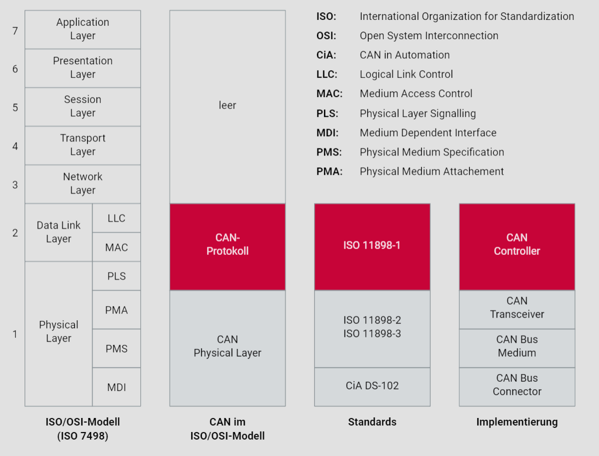
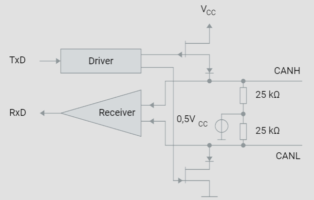
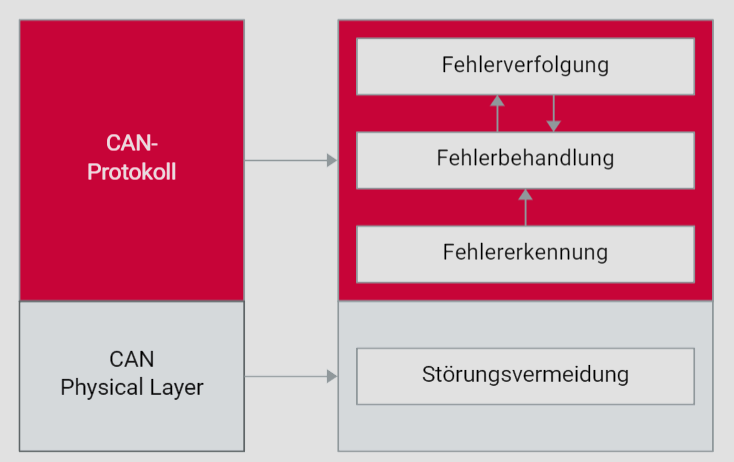

Einführung
Motivation für CAN
Einleitung
Die jüngere Geschichte des Automobils ist durch eine intensive Elektronifizierung gekennzeichnet. Die treibende Kraft dafür geht in der Hauptsache von den immer anspruchsvolleren Wünschen der Kunden an ein modernes Automobil aus. Des Weiteren werden vom Gesetzgeber immer strengere Vorgaben zur Abgasemission gemacht. Aber auch die Globalisierung sorgt durch gestiegenen Wettbewerbs- und Kostendruck für stetigen Innovationsdruck.
Datenaustausch zwischen Steuergeräten
Zu Beginn der Elektronifizierung reichten autonom arbeitende elektronische Steuergeräte (ECUs - Electronic Control Units) aus, um verschiedene Funktionen im Fahrzeug zu steuern. Jedoch wurde früh erkannt, dass die Koordination dieser Steuergeräte die Fahrzeugfunktionalität erheblich steigern kann. Der initiale Datenaustausch zwischen den Steuergeräten wurde konventionell realisiert, was bedeutete, dass jedem zu übertragenden Signal ein physikalischer Kommunikationskanal zugeordnet wurde. Dies führte zu einer komplexen und umfangreichen Verkabelung.
Probleme der konventionellen Vernetzung
Die konventionelle Vernetzung, wie im linken Teil des Bildes dargestellt, zeigt eine direkte Punkt-zu-Punkt-Verbindung zwischen den Steuergeräten. Diese Methode hat mehrere Nachteile:
- Hoher Verkabelungsaufwand: Jede Verbindung erfordert separate Kabel, was die Menge der benötigten Kabel erhöht.
- Eingeschränkte Erweiterbarkeit: Das Hinzufügen neuer Steuergeräte oder Funktionen führt zu einer exponentiellen Zunahme der Verkabelung.
- Gewicht und Platzbedarf: Die Vielzahl an Kabeln erhöht das Fahrzeuggewicht und beansprucht wertvollen Raum.

Das obige Bild veranschaulicht den Unterschied zwischen konventioneller Vernetzung und Busvernetzung. Links sind mehrere ECUs direkt miteinander verbunden, was eine aufwendige und unübersichtliche Verkabelung darstellt. Rechts hingegen sind die ECUs über einen gemeinsamen Bus verbunden, was die Verkabelung erheblich vereinfacht und effizienter macht. Darunter ist ein Signalverlauf dargestellt, der die bitserielle Datenübertragung im CAN-Bus symbolisiert.
Einführung des seriellen Kommunikationssystems
Um den Verkabelungsaufwand zu reduzieren und die Datenkommunikation zu optimieren, wurde ein serielles Kommunikationssystem entwickelt. Der bitserielle Austausch von Daten über einen einzigen Kommunikationskanal (Bus) wurde als Lösung identifiziert. Dies erforderte die Entwicklung eines spezifischen seriellen Kommunikationssystems für Automobile.
CAN (Controller Area Network)
In den frühen 1980er Jahren begann Bosch mit der Entwicklung des CAN-Bus-Systems. CAN ist darauf ausgelegt, eine sichere und zuverlässige Datenübertragung zu gewährleisten, die den Echtzeitanforderungen von Anwendungen im Automobil gerecht wird. Noch heute ist CAN ein unverzichtbarer Bestandteil der Vernetzung von Steuergeräten im Antrieb, Fahrwerk und Komfortbereich.
Vorteile des CAN-Bus-Systems
Die Einführung des CAN-Bus-Systems, wie im rechten Teil des Bildes dargestellt, bietet zahlreiche Vorteile:
- Reduzierter Verkabelungsaufwand: Ein einziger Bus kann von mehreren Steuergeräten gemeinsam genutzt werden, was die Anzahl der benötigten Kabel drastisch reduziert.
- Erhöhte Flexibilität: Neue Steuergeräte können einfach an den bestehenden Bus angeschlossen werden, was die Erweiterbarkeit erleichtert.
- Gewichts- und Platzersparnis: Weniger Kabel bedeuten geringeres Gewicht und mehr Platz für andere Komponenten.
- Sichere Übertragung: CAN zeichnet sich durch eine sehr zuverlässige und sichere Datenübertragung aus, die für Echtzeitanwendungen geeignet ist.
Fazit
Die Elektronifizierung des Automobils hat durch die Einführung des CAN-Bus-Systems erhebliche Fortschritte gemacht. Die komplexen und umfangreichen Kabelbäume der konventionellen Vernetzung gehören der Vergangenheit an. CAN vereinfacht nicht nur die Projektierung und Installation, sondern trägt auch zur Reduktion des Gewichts und Platzbedarfs der Verkabelung bei. Dies spiegelt die kontinuierliche Innovationskraft und Anpassungsfähigkeit der Automobilindustrie wider, um den steigenden Anforderungen und regulatorischen Vorgaben gerecht zu werden.
Standardisierung
Die Controller Area Network (CAN)-Technologie ist seit 1994 standardisiert und spielt eine zentrale Rolle in der Fahrzeug-Elektronik. Die CAN-Standards werden hauptsächlich durch drei ISO-Dokumente beschrieben, die spezifische Aspekte des CAN-Protokolls und seiner Implementierung abdecken. In dieser detaillierten Einführung werden wir die verschiedenen Schichten des ISO/OSI-Referenzmodells, die relevanten CAN-Standards und die Implementierung von CAN in Fahrzeugen betrachten.
CAN-Protokoll
Das CAN-Protokoll ist durch die ISO 11898-1 standardisiert. Im Vergleich zum ISO/OSI-Referenzmodell der Datenkommunikation deckt das CAN-Protokoll die Schichten Data Link Layer und Physical Layer ab.
Data Link Layer
Im Data Link Layer wird das CAN-Protokoll in zwei Hauptkomponenten unterteilt:
- LLC (Logical Link Control): Diese Komponente sorgt für die logische Steuerung des Datenflusses.
- MAC (Medium Access Control): Diese Komponente regelt den Zugang zum Übertragungsmedium und steuert die Datenübertragung zwischen den Netzwerkteilnehmern.
Physical Layer
Der Physical Layer des CAN-Protokolls wird durch die PLS (Physical Layer Signalling) beschrieben, welche die physikalische Signalisierung der Daten definiert.
CAN-Controller
Das CAN-Protokoll wird in Hardware durch sogenannte CAN-Controller implementiert. Es gibt verschiedene Arten von CAN-Controllern, die sich im Umgang mit CAN-Botschaften unterscheiden. Man unterscheidet hauptsächlich zwischen:
- Full-CAN-Controller: Diese Controller speichern CAN-Botschaften in einem internen Speicher.
- Basic-CAN-Controller: Diese Controller besitzen keinen internen Objektespeicher und bearbeiten Botschaften direkt.
CAN-High-Speed und CAN-Low-Speed
Die physikalische Schicht des CAN-Protokolls wird durch zwei Hauptstandards definiert:
- ISO 11898-2 (CAN-High-Speed): Dieser Standard erlaubt Datenraten bis zu 1 MBit/s und findet Anwendung in sicherheitskritischen Bereichen wie Antrieb und Fahrwerk.
- ISO 11898-3 (CAN-Low-Speed): Dieser Standard erlaubt Datenraten bis zu 125 KBit/s und wird vorwiegend in weniger kritischen Bereichen wie Komfortsystemen verwendet.
Datenraten
Die Datenübertragungsraten im CAN-Netzwerk variieren je nach Anwendungsbereich:
- ISO 11898-2: Unterstützt Datenraten bis zu 1 MBit/s und wird in Bereichen eingesetzt, die hohe Datenübertragungsraten erfordern.
- ISO 11898-3: Unterstützt Datenraten bis zu 125 KBit/s und wird in Anwendungen verwendet, die geringere Übertragungsraten benötigen.
Medium Dependent Interface (MDI)
Für die Unterschicht MDI des Physical Layers existiert kein spezifischer Standard. Die CiA DS-102 (CAN in Automation) gibt jedoch Empfehlungen für die Verwendung bestimmter Stecker, wie zum Beispiel SUB-D9-Stecker, und deren Belegung.
Ereignisgesteuerte Kommunikation
Die Kommunikation im CAN-Netzwerk ist ereignisgesteuert, wie in der ISO 11898-1 definiert. Bei hoher Buslast kann es zur Verzögerung niederpriorisierter CAN-Botschaften kommen. Um eine deterministische Kommunikation zu gewährleisten, kann die ISO 11898-4 herangezogen werden, welche eine zeitgesteuerte Kommunikationsoption für CAN-basierte Netzwerke bietet.
ISO/OSI-Referenzmodell und CAN
Die folgende Grafik zeigt die Beziehung zwischen dem ISO/OSI-Referenzmodell der Datenkommunikation, dem CAN-Standard und der Implementierung:
Schichtenmodell
- ISO/OSI-Modell: Das klassische 7-Schichten-Modell der Datenkommunikation.
- CAN im ISO/OSI-Modell: Darstellung der Schichten, die durch das CAN-Protokoll abgedeckt werden.
- Standards und Implementierung: Überblick über die relevanten ISO-Standards und deren Implementierung in Hardware und Netzwerken.
Durch die Standardisierung und die detaillierte Spezifikation ermöglicht CAN eine zuverlässige und effiziente Kommunikation in Fahrzeugnetzwerken, die sowohl sicherheitskritische als auch komfortbezogene Anwendungen abdeckt.
Kommunikation
CAN-Netzwerk
Aufbau
Ein Controller Area Network (CAN) ist ein robustes Fahrzeugbussystem, das zur Kommunikation zwischen Mikrocontrollern und Geräten ohne Host-Computer konzipiert wurde. Ein typisches CAN-Netzwerk, wie im Bild dargestellt, besteht aus mehreren CAN-Knoten, die über ein physikalisches Übertragungsmedium, den sogenannten CAN-Bus, miteinander verbunden sind. Die Linientopologie ist die gängigste Konfiguration, bei der elektronische Steuergeräte (ECUs) mit CAN-Schnittstelle passiv an einen linearen Bus angeschlossen werden. Alternativ kann auch eine passive Sterntopologie verwendet werden, wobei alle Knoten sternförmig an einen zentralen Punkt angeschlossen sind.
Physikalisches Übertragungsmedium
Das physikalische Übertragungsmedium in einem CAN-Netzwerk ist in der Regel eine ungeschirmte, verdrillte Zweidrahtleitung (Unshielded Twisted Pair - UTP). Diese verdrillte Paarleitung ermöglicht eine symmetrische Signalübertragung, was Störungen minimiert. Typische Leitungen haben einen Querschnitt zwischen 0,34 mm² und 0,6 mm². Der spezifische Widerstand der Leitung sollte weniger als 60 mΩ/m betragen, um eine effiziente Signalübertragung sicherzustellen.
Randbedingungen
- Datenrate und Netzwerkgröße: Die maximale Datenrate in einem CAN-Netzwerk beträgt 1 MBit/s. Bei dieser Datenrate ist eine maximale Netzwerkreichweite von etwa 40 Metern zulässig.
- Busabschlusswiderstände: An den Enden des CAN-Busses befinden sich Abschlusswiderstände (RT), um Reflexionen zu vermeiden und die Signalintegrität zu gewährleisten. Diese Widerstände haben typischerweise einen Wert von 120 Ohm.
- Anzahl der Knoten: Gemäß der ISO 11898-Norm darf ein CAN-Netzwerk bis zu 32 Knoten umfassen.
CAN-Netzwerk mit drei Knoten
Das untere Bild zeigt ein typisches CAN-Netzwerk mit drei CAN-Knoten (Steuergeräten), die an einen CAN-Bus angeschlossen sind. Die beiden Leitungen, CANH (CAN High Leitung) und CANL (CAN Low Leitung), sind die beiden verdrillten Drähte, die das symmetrische Signal übertragen. An beiden Enden des Busses sind Abschlusswiderstände (RT) installiert, um Reflexionen zu verhindern und die Signalqualität zu sichern. Eine mögliche Ergänzung könnte die Erwähnung der spezifischen Anforderungen an die Länge und Verdrillung der Leitungen sein, um elektromagnetische Störungen weiter zu minimieren. Auch die Integration von Busüberwachung und Diagnosefunktionen könnte für ein umfassendes Verständnis von CAN-Netzwerken sinnvoll sein.
Fazit
Ein CAN-Netzwerk ist eine wesentliche Komponente in der Fahrzeugtechnik, die eine zuverlässige und effiziente Kommunikation zwischen verschiedenen elektronischen Steuergeräten ermöglicht. Durch die Einhaltung der beschriebenen technischen Spezifikationen und Normen kann die Leistungsfähigkeit und Zuverlässigkeit eines CAN-Systems sichergestellt werden.
CAN-Knoten
Einleitung
Die fortschreitende Elektronifizierung des Automobils führt zu einer rasanten Zunahme der Quantität und Komplexität der Software. Moderne Fahrzeuge, insbesondere in der Oberklasse, verfügen über mehr als 1000 Software-Funktionen, die auf über 70 elektronischen Steuergeräten (Electronic Control Units – ECUs) in verschiedenen Bussystemen ausgeführt werden. Ein elektronisches Steuergerät in einem CAN-Netzwerk wird als CAN-Knoten bezeichnet.
Steigende Komplexität in der Steuergerätevernetzung
In den Anfängen der Steuergerätevernetzung war ein einfacher CAN-Treiber ausreichend, der eine weitgehend hardwareunabhängige Schnittstelle für die Applikation bereitstellte. Ein CAN-Controller und ein CAN-Transceiver ermöglichten die Realisierung der CAN-Schnittstelle. Heutzutage sind ein Betriebssystem und Funktionen des Netzwerkmanagements sowie der Diagnose unabdingbar. Die stark gewachsene Softwarekomplexität erfordert eine Vereinheitlichung der Steuergeräteinfrastruktur.
Vereinheitlichung der Software
Eine einheitliche Softwarearchitektur reduziert den Entwicklungsaufwand und erleichtert die Wartung. Sie ermöglicht zudem eine höhere Wiederverwendbarkeit und Austauschbarkeit von Software-Komponenten zwischen verschiedenen Fahrzeugplattformen und zwischen OEMs (Original Equipment Manufacturer) und Zulieferern.
AUTOSAR (AUTomotive Open System ARchitecture)
AUTOSAR bietet eine Referenzarchitektur für Steuergerätesoftware, mit dem Ziel, die Softwareentwicklung zu standardisieren und zu vereinfachen. Im Mittelpunkt dieser Architektur steht das AUTOSAR Runtime Environment (RTE), welches das Netzwerk vollständig von den Applikationssoftware-Komponenten entkoppelt. Das RTE bietet den Software-Komponenten einheitliche Dienste in Form der Basis-Software. Diese Basis-Software ist in drei Ebenen unterteilt: Microcontroller Abstraction Layer, ECU Abstraction Layer und Service Layer.
Aufbau eines CAN-Knotens
Die folgende Grafik zeigt den Aufbau eines modernen CAN-Knotens gemäß der AUTOSAR-Architektur.

Microcontroller Abstraction Layer
Diese unterste Ebene abstrahiert die Hardware und stellt Treiber bereit, die direkt mit der Hardware interagieren. Dazu gehören:
- Microcontroller Drivers: Treiber für die grundlegende Funktionalität des Mikrocontrollers.
- Memory Drivers: Treiber für den Zugriff auf den Speicher.
- I/O Drivers: Treiber für Eingabe-/Ausgabegeräte.
ECU Abstraction Layer
Diese Ebene abstrahiert die spezifische Hardware der ECUs und ermöglicht eine hardwareunabhängige Softwareentwicklung. Zu den Komponenten gehören:
- Communication Drivers: Treiber für die Kommunikation, z.B. CAN- und SPI-Treiber.
- Communication Hardware Abstraction: Abstraktionsschicht für die Kommunikationshardware, wie CAN-Interfaces und Transceiver-Treiber.
- Memory Hardware Abstraction: Abstraktionsschicht für den Speicherzugriff.
- Onboard Device Abstraction: Abstraktionsschicht für die Steuergeräte-Hardware.
Service Layer
Diese höchste Ebene der Basis-Software bietet verschiedene Dienste für die Applikationssoftware. Zu den wichtigsten Komponenten gehören:
- System Services: Basisdienste für die Systemverwaltung.
- Memory Services: Dienste für den Speicherzugriff und -verwaltung.
- Communication Services: Diese umfassen AUTOSAR COM für die Standardkommunikation, den Diagnostic COM Manager für Diagnosedienste und Generic NM/CAN NM für das Netzwerkmanagement. Der PDU Router koordiniert die Kommunikation zwischen diesen Diensten und dem CAN TP (Transportprotokoll).
Fazit
Die Verwendung der AUTOSAR-Architektur in modernen Fahrzeugen ermöglicht eine strukturierte und effiziente Entwicklung von Steuergerätesoftware. Durch die Entkopplung der Applikationssoftware von der Hardware und die Bereitstellung einheitlicher Dienste wird die Komplexität beherrschbar und die Wiederverwendbarkeit von Software-Komponenten gefördert. Dies trägt wesentlich zur Reduzierung von Entwicklungskosten und zur Erhöhung der Qualität und Zuverlässigkeit der Fahrzeugsoftware bei.
CAN-Controller
Einführung in das CAN-Netzwerk
Das Controller Area Network (CAN) ist ein robustes Fahrzeugbus-Standard, der es Mikrocontrollern und Geräten ermöglicht, ohne Host-Computer miteinander zu kommunizieren.
Aufbau eines CAN-Netzwerks
In einem CAN-Netzwerk, wie in der unteren Grafik dargestellt, bestehen die grundlegenden Komponenten aus mehreren CAN-Knoten, die jeweils aus einem Host, einem CAN-Controller und einem CAN-Transceiver bestehen. Die Knoten sind über die beiden Leitungen CANH (CAN High) und CANL (CAN Low) miteinander verbunden. An beiden Enden des CAN-Busses befindet sich jeweils ein Terminierungswiderstand ( R_T ), der für die korrekte Funktion des Netzwerks notwendig ist.

Komponenten eines CAN-Knotens
CAN-Controller
Der CAN-Controller übernimmt die Kommunikationsaufgaben gemäß dem CAN-Protokoll und entlastet dadurch den Host. Er ist verantwortlich für das Senden und Empfangen von Nachrichten, das Erkennen von Fehlern und das Gewährleisten der Datensicherheit und -integrität.
CAN-Transceiver
Der CAN-Transceiver verbindet den CAN-Controller mit dem physikalischen Übertragungsmedium. Üblicherweise sind der CAN-Controller und der CAN-Transceiver galvanisch getrennt, oft mittels Optokoppler, um Überspannungsschäden zu verhindern. Diese Trennung schützt den Host und den CAN-Controller vor Beschädigungen durch Überspannungen auf dem CAN-Bus.
Kommunikation im CAN-Netzwerk
In einem CAN-Netzwerk können die Anzahl der zu sendenden und empfangenden Nachrichten sowie deren Frequenzen stark variieren. Ein Knoten könnte beispielsweise fünf verschiedene Nachrichten in einem Zyklus von zehn Millisekunden empfangen, während ein anderer Knoten alle 100 Millisekunden nur eine Nachricht empfängt. Diese Unterschiede haben zur Entwicklung von zwei grundlegenden CAN-Controller-Architekturen geführt:
- CAN-Controller mit Objektespeicherung: Diese Architektur speichert Nachrichten in einer internen Queue, wodurch eine effiziente Handhabung von Nachrichten mit hoher Frequenz ermöglicht wird.
- CAN-Controller ohne Objektespeicherung: Diese Architektur ist einfacher und eignet sich für Anwendungen mit geringeren Kommunikationsanforderungen.
Integration von CAN-Controllern
CAN-Controller können entweder als integrierte oder eigenständige Bausteine (stand-alone) verwendet werden. Bei der Stand-Alone-Variante behandelt der Mikrocontroller den CAN-Controller wie einen Speicherbaustein, was größere Flexibilität bietet. Die On-Chip-Variante nimmt weniger Platz in Anspruch und ermöglicht eine schnellere und zuverlässigere Kommunikation zwischen Mikrocontroller und CAN-Controller.
Terminierung des CAN-Busses
Die Terminierung des CAN-Busses erfolgt durch Widerstände an den beiden Enden der CAN-Leitungen. Diese Terminierungswiderstände ( R_T ) verhindern Signalreflexionen, die zu Kommunikationsstörungen führen könnten. In der obigen Grafik sind diese Widerstände am Anfang und Ende des Busses dargestellt.
Fazit
Das Verständnis der Architektur und der Funktionsweise eines CAN-Netzwerks ist essenziell für die Entwicklung und Wartung moderner Fahrzeugsysteme. Die richtige Integration und Konfiguration der CAN-Controller und Transceiver sowie die korrekte Terminierung des Busses sind entscheidend für die Zuverlässigkeit und Effizienz der Kommunikation im Fahrzeug.
CAN-Transceiver
Busankopplung in CAN-Netzwerken
In modernen Fahrzeugen wird die Ankopplung des CAN-Controllers an das Kommunikationsmedium (CAN-Bus) in der Regel durch CAN-Transceiver realisiert. Dies ist eine Weiterentwicklung gegenüber der früheren diskreten Realisierung. Die symmetrische physikalische Signalübertragung in einem CAN-Netzwerk gewährleistet eine hohe elektromagnetische Verträglichkeit. Das physikalische Übertragungsmedium besteht aus zwei Leitungen: der CAN-High-Leitung (CANH) und der CAN-Low-Leitung (CANL). Entsprechend verfügen CAN-Transceiver über zwei Buspins für diese Leitungen.
-
CAN-Transceiver:
- TxD (Transmit Data): Eingangssignal vom Mikrocontroller.
- Driver: Sendet das Signal auf den CAN-Bus.
- CANH und CANL: Busleitungen für differenzielle Signalübertragung.
- RxD (Receive Data): Ausgangssignal zum Mikrocontroller.
- Der Transceiver sorgt dafür, dass die Differenzspannung zwischen CANH und CANL entsprechend der Spezifikation gehalten wird.
-
Busankopplung mit CMC:
- Common Mode Choke (CMC): Reduziert Emissionen und erhöht die Störfestigkeit.
- Die CMC wird zwischen den CAN-Bus-Leitungen und den CANH- und CANL-Pins des Transceivers geschaltet, um symmetrische Störungen zu unterdrücken.
High-Speed und Low-Speed CAN-Transceiver
Es gibt zwei Haupttypen von CAN-Transceivern: High-Speed und Low-Speed. High-Speed-CAN-Transceiver unterstützen Datenraten bis zu 1 MBit/s, während Low-Speed-CAN-Transceiver Datenraten bis zu 125 KBit/s unterstützen. Low-Speed-Transceiver bieten jedoch den Vorteil einer fehlertoleranten Busankopplung, sodass der Ausfall einer der beiden Kommunikationsleitungen nicht zum Ausfall des gesamten Kommunikationsbetriebs führt.
Aufbau eines CAN-Transceivers
Die Struktur eines High-Speed-CAN-Transceivers ist in der beigefügten Grafik dargestellt. Wenn beide Ausgangstransistoren gesperrt sind, nehmen beide CAN-Leitungen das gleiche Potenzial (0,5*Vcc) an, wodurch die Differenzspannung null ist. Sobald beide Transistoren durchschalten, entsteht zwischen den Leitungen eine vom Lastwiderstand abhängige Spannungsdifferenz, die gemäß ISO 11898-2 2 Volt betragen sollte. Dabei fließt ein Strom von etwa 35 mA.
Störfestigkeit
CAN-Transceiver zeichnen sich durch eine geringe Emission und eine hohe Störfestigkeit aus, die durch einen breiten Gleichtaktarbeitsbereich erreicht wird. Moderne Transceiver bieten zudem einen ESD-Schutz von bis zu 8 kV. In besonders kritischen Anwendungen kann eine nahe am Ausgang geschaltete Gleichtaktdrossel (Common Mode Choke - CMC) verwendet werden, um Emissionen weiter zu reduzieren.

Maximale Anzahl an CAN-Knoten
Die ISO 11898 gibt eine maximale Anzahl von 32 CAN-Knoten vor. In der Praxis hängt die maximale Anzahl der Knoten jedoch stark von der Leistungsfähigkeit der verwendeten CAN-Transceiver ab und davon, ob es sich um ein High-Speed- oder Low-Speed-Netzwerk handelt. Beispielsweise können mit dem High-Speed-CAN-Transceiver TJA1050 in einem entsprechenden Netzwerk bis zu 110 Knoten verbunden werden.
CAN-Bus
Einleitung
Die CAN-Kommunikation (Controller Area Network) ist ein weit verbreitetes Netzwerkprotokoll in der Automobilindustrie, das eine robuste und effiziente Datenübertragung zwischen verschiedenen Steuergeräten ermöglicht. Dieses Tutorial bietet eine detaillierte Übersicht über die physikalische Signalübertragung in einem CAN-Netzwerk und erläutert die wesentlichen Komponenten und Prinzipien.
Differenzsignalübertragung
Die physikalische Signalübertragung in einem CAN-Netzwerk basiert auf der Übertragung von Spannungsdifferenzen, auch bekannt als Differenzsignalübertragung. Diese Methode minimiert die Auswirkungen von elektromagnetischen Störungen, die durch Motoren, Zündanlagen und Schaltkontakte induziert werden können. In einem CAN-Bus bestehen die Übertragungsleitungen aus zwei separaten Leitungen: der CAN-High-Leitung (CANH) und der CAN-Low-Leitung (CANL). Der Unterschied in den Spannungen zwischen diesen beiden Leitungen trägt die Information, wodurch das System resistenter gegen Störsignale wird.
Verdrillte Leiterpaare
Die Verwendung von verdrillten Leiterpaaren ist eine gängige Praxis in der CAN-Kommunikation. Das Verdrillen der beiden Leitungen (CANH und CANL) reduziert das erzeugte magnetische Feld erheblich, was wiederum die elektromagnetische Störanfälligkeit senkt. In der Praxis wird daher als physikalisches Übertragungsmedium in der Regel ein verdrilltes Leiterpaar (Twisted Pair) verwendet.
Abschlusswiderstände
Abschlusswiderstände spielen eine entscheidende Rolle bei der Vermeidung von Signalreflexionen, die durch die finite Signalausbreitungsgeschwindigkeit verursacht werden. Diese Reflexionen können bei hohen Datenraten oder langen Busausdehnungen problematisch werden. Durch die Terminierung der Enden des Kommunikationskanals mit Abschlusswiderständen wird eine Nachbildung der elektrischen Eigenschaften des Übertragungsmediums erreicht, was Reflexionen in einem CAN-High-Speed-Netzwerk effektiv verhindert.
Der Abschlusswiderstand muss dem Wellenwiderstand der elektrischen Leitung entsprechen, der in der Regel 120 Ohm beträgt. Während die ISO 11898-2 Norm für High-Speed-CAN-Netzwerke diesen Widerstand vorschreibt, ist dies bei der ISO 11898-3 Norm für Low-Speed-CAN-Netzwerke aufgrund der geringeren maximalen Datenrate von 125 KBit/s nicht erforderlich.
Aufbau eines CAN-Knotens
Ein typischer CAN-Knoten besteht aus folgenden Komponenten:
- Host: Dies ist die zentrale Verarbeitungseinheit, die die Steuerlogik und Datenverarbeitung durchführt.
- CAN-Controller: Der Controller formatiert die zu sendenden Nachrichten und verarbeitet empfangene Nachrichten.
- CAN-Transceiver: Der Transceiver wandelt die vom Controller kommenden digitalen Signale in differenzielle Signale um, die über das physikalische Medium übertragen werden, und umgekehrt.
Das dargestellte Diagramm zeigt ein typisches CAN-Netzwerk mit drei CAN-Knoten. Jeder Knoten besteht aus einem Host, einem CAN-Controller und einem CAN-Transceiver. Die CAN-High- (CANH) und CAN-Low-Leitungen (CANL) sind als verdrillte Leiterpaare dargestellt, die die Störanfälligkeit minimieren. An den Enden des Busses befinden sich Abschlusswiderstände (RT) mit einem Wert von 120 Ohm, um Reflexionen zu verhindern.

Fazit
Ein tiefes Verständnis der physikalischen Prinzipien der CAN-Kommunikation, einschließlich der Differenzsignalübertragung, der Verwendung verdrillter Leiterpaare und der Rolle von Abschlusswiderständen, ist essenziell für die Entwicklung zuverlässiger und effizienter Netzwerke in der Automobilindustrie. Dieses Tutorial hat die wesentlichen Aspekte dieser Technologie beleuchtet und bietet eine solide Grundlage für weiterführende Studien und Anwendungen im Bereich der Fahrzeug-Elektronik.
Busankopplung
Die physikalische Signalübertragung in einem CAN-Netzwerk basiert auf der Differenzsignalübertragung. Die Differenzspannungen hängen von der eingesetzten Busankopplung ab. Man unterscheidet zwischen der CAN-Highspeed-Busankopplung (ISO 11898-2) und der CAN-Lowspeed-Busankopplung (ISO 11898-3).
Spannungsverhältnisse
Die ISO 11898-2 weist der logischen 1 eine typische Differenzspannung von 0 Volt zu. Der logischen 0 wird eine typische Differenzspannung von 2 Volt zugewiesen. CAN-Highspeed-Transceiver deuten innerhalb des Gleichtaktarbeitsbereichs, der üblicherweise zwischen 12 Volt und -12 Volt liegt, eine Differenzspannung von mehr als 0,9 Volt als dominanten Pegel. Unterhalb von 0,5 Volt dagegen wird die Differenzspannung als rezessiver Pegel gedeutet. Eine Hysterese-Schaltung erhöht die Immunität gegenüber Störspannungen.
Die ISO 11898-3 weist der logischen 1 eine typische Differenzspannung von 5 Volt zu, der logischen 0 eine typische Differenzspannung von 2 Volt.
CAN-Highspeed-Buspegel (ISO 11898-2)
Die Grafik "CAN-Highspeed-Buspegel" zeigt die unterschiedlichen Spannungsverhältnisse auf dem CAN-Bus für Highspeed-Anwendungen. Bei der Highspeed-Busankopplung bewegen sich die Spannungen für CANH (CAN High) und CANL (CAN Low) wie folgt:
- Rezessiver Zustand (logische 1): CANH und CANL haben beide eine Spannung von etwa 2,5 Volt.
- Dominanter Zustand (logische 0): CANH hat eine Spannung von etwa 3,5 Volt und CANL eine Spannung von etwa 1,5 Volt.
Diese Differenz von 2 Volt wird als dominanter Pegel erkannt, während eine Differenz von 0 Volt als rezessiver Pegel erkannt wird.

CAN-Lowspeed-Buspegel (ISO 11898-3)
Die Grafik "CAN-Lowspeed-Buspegel" zeigt die unterschiedlichen Spannungsverhältnisse auf dem CAN-Bus für Lowspeed-Anwendungen. Bei der Lowspeed-Busankopplung bewegen sich die Spannungen für CANH und CANL wie folgt:
- Rezessiver Zustand (logische 1): CANH hat eine Spannung von etwa 0 Volt und CANL hat eine Spannung von etwa 5 Volt.
- Dominanter Zustand (logische 0): CANH hat eine Spannung von etwa 3,6 Volt und CANL eine Spannung von etwa 1,4 Volt.
Auch hier ergibt sich eine Differenz von 2 Volt für den dominanten Pegel, während eine Differenz von 5 Volt als rezessiver Pegel erkannt wird.

Fazit
Die Spannungsverhältnisse und die Unterscheidung zwischen dominanten und rezessiven Pegeln sind entscheidend für die korrekte Funktion eines CAN-Busses. Die unterschiedlichen Normen ISO 11898-2 und ISO 11898-3 definieren spezifische Spannungsbereiche für Highspeed- und Lowspeed-Anwendungen. Ein tiefes Verständnis dieser Spezifikationen ist essentiell für die Entwicklung und Fehlerdiagnose in Fahrzeugnetzwerken.
CAN-Buslogik im Fahrzeug
Der Controller Area Network (CAN) Bus ist ein robustes Fahrzeugnetzwerk, das es Mikrocontrollern und Geräten ermöglicht, ohne einen Host-Computer direkt miteinander zu kommunizieren. CAN-Busse sind in der Automobilindustrie weit verbreitet und werden für verschiedene elektronische Steuergeräte (ECUs) genutzt. Ein tiefes Verständnis der CAN-Buslogik ist entscheidend für die Diagnose und das Design von Fahrzeugnetzen. Diese Anleitung gibt eine detaillierte Erklärung der CAN-Buslogik basierend auf den bereitgestellten Informationen und Abbildungen.
Dominanter und Rezessiver Buspegel
In einem CAN-Netzwerk ist die Unterscheidung zwischen dominantem und rezessivem Buspegel entscheidend:
- Dominanter Buspegel: Entspricht der logischen "0".
- Rezessiver Buspegel: Entspricht der logischen "1".
Ein dominanter Pegel überschreibt immer einen rezessiven Pegel. Das bedeutet, wenn verschiedene CAN-Knoten gleichzeitig dominante und rezessive Pegel senden, nimmt der CAN-Bus den dominanten Pegel an. Nur wenn alle CAN-Knoten einen rezessiven Pegel senden, wird dieser auf dem Bus aktiv.
UND-Logik
Dieses Verhalten entspricht einer UND-Logik, die physikalisch durch eine Open-Collector-Schaltung realisiert wird. Die Open-Collector-Ausgänge der CAN-Knoten sind miteinander verbunden und arbeiten nach dem Prinzip, dass der Buspegel "0" (dominant) ist, sobald ein Knoten diesen Pegel sendet.
Die Abbildung zeigt drei CAN-Knoten (Knoten 1, Knoten 2 und Knoten 3), die jeweils mit dem CAN-Bus verbunden sind. Jeder Knoten kann entweder einen dominanten oder einen rezessiven Pegel senden. Die Tabelle neben der Abbildung zeigt die Logik der gesendeten Pegel und deren Ergebnis auf dem CAN-Bus.
- Sender 1, 2 und 3: Diese repräsentieren die Signale der drei Knoten. Jeder Knoten kann ein Bit senden, das entweder 0 (dominant) oder 1 (rezessiv) ist.
- CAN-Bus: Der kombinierte Pegel auf dem Bus, der durch die dominante Logik der Open-Collector-Schaltung bestimmt wird.
Funktionsweise der Schaltung
- Initialzustand: Der Widerstand R zieht den Bus auf den rezessiven Pegel "1", wenn keine Knoten senden.
- Senden eines dominanten Pegels: Wenn ein Knoten einen dominanten Pegel "0" sendet, zieht er den Bus auf diesen Pegel, unabhängig davon, was die anderen Knoten senden.
- Rezessiver Pegel: Der Bus bleibt nur dann auf dem rezessiven Pegel "1", wenn alle Knoten rezessiv senden.
Verständnis der Wired-AND-Buslogik
Die Open-Collector-Schaltung ermöglicht eine effektive Realisierung der Wired-AND-Logik. Die Tabelle in der Abbildung zeigt verschiedene Szenarien, in denen die Kombination der gesendeten Pegel durch die Knoten das Ergebnis auf dem CAN-Bus beeinflusst.
Beispiel:
- Sender 1: 0 1 0 1 0 1 0 1
- Sender 2: 0 0 1 1 0 1 1 1
- Sender 3: 0 0 0 1 1 1 1 1
- CAN-Bus: 0 0 0 0 0 1 0 1
Hier zeigt sich, dass der CAN-Bus nur dann "1" (rezessiv) ist, wenn alle Sender diesen Pegel senden.
Anwendung in Fahrzeugen
Diese Logik ermöglicht eine zuverlässige Kommunikation und Fehlererkennung in Fahrzeugen. Jeder Knoten kann den Zustand des Busses überwachen und feststellen, ob sein gesendetes Signal korrekt übertragen wird. Falls ein dominantes Signal gesendet wird und ein rezessiver Pegel gelesen wird, erkennt der Knoten eine Kollision und kann entsprechend reagieren.
Fazit
Das Verständnis der CAN-Buslogik und der Wired-AND-Logik ist essenziell für das Design und die Diagnose von Fahrzeugnetzwerken. Die Open-Collector-Schaltung stellt sicher, dass der dominante Pegel Vorrang hat und ermöglicht so eine zuverlässige Kommunikation zwischen den verschiedenen Steuergeräten im Fahrzeug.
CAN-Kommunikationsprinzips im Fahrzeug
Im Folgenden wird das CAN-Kommunikationsprinzip im Detail erklärt. Das Ziel ist es, ein tiefes Verständnis der Struktur und Funktionsweise eines CAN-Netzwerks im Fahrzeug zu vermitteln. Dabei wird besonders auf die Aspekte der Dezentralisierung, Ereignisorientierung und empfängerselektiven Adressierung eingegangen. Zusätzlich wird die Kommunikationsmatrix ausführlich behandelt, um die komplexen Interaktionen zwischen den CAN-Knoten zu verdeutlichen.
1. Dezentralisierung
In sicherheitskritischen Anwendungen, wie dem Antriebsstrang eines Fahrzeugs, ist eine hohe Verfügbarkeit des Kommunikationssystems unerlässlich. Die Dezentralisierung des Buszugriffs spielt hierbei eine entscheidende Rolle.
Vorteile der Dezentralisierung
- Erhöhte Redundanz: Jeder CAN-Knoten besitzt das Recht, auf den Bus zuzugreifen. Dies bedeutet, dass der Ausfall eines einzelnen Knoten nicht den Ausfall des gesamten Systems zur Folge hat.
- Lastverteilung: Die Verteilung der Kommunikationslast auf mehrere Knoten verhindert die Überlastung einzelner Komponenten und sorgt für eine gleichmäßige Auslastung des Systems.
- Ausfallsicherheit: Durch die Dezentralisierung wird die Ausfallsicherheit des Netzwerks erhöht, da kein einzelner Punkt als Schwachstelle existiert.
2. Ereignisorientierung
Ein CAN-Netzwerk verwendet eine ereignisorientierte Kommunikationsstrategie, die es ermöglicht, effizient und schnell auf Änderungen zu reagieren. Dies unterscheidet sich grundlegend von zeitgesteuerten Systemen, bei denen Nachrichten in festen Intervallen gesendet werden.
Merkmale der ereignisorientierten Kommunikation
- Asynchrone Datenübertragung: Nachrichten werden nur gesendet, wenn Ereignisse dies erfordern. Dies reduziert die unnötige Belastung des Netzwerks.
- Hohe Reaktionsgeschwindigkeit: CAN-Netzwerke können auf Ereignisse in Echtzeit reagieren, was besonders für sicherheitskritische Anwendungen wichtig ist.
- Effiziente Bandbreitennutzung: Die Übertragungskapazität wird optimal genutzt, da nur relevante Daten gesendet werden.
Beispiel
Ein Sensor in einem Fahrzeug detektiert eine plötzliche Bremsung und sendet sofort eine entsprechende Nachricht an das Steuergerät. Da das Netzwerk ereignisorientiert arbeitet, wird die Nachricht umgehend verarbeitet und die erforderlichen Maßnahmen werden eingeleitet.
3. Empfängerselektive Adressierung
Um eine flexible und skalierbare Netzwerkkonfiguration zu ermöglichen, verwendet das CAN-System eine empfängerselektive Adressierung. Dies bedeutet, dass jede Nachricht von jedem Knoten empfangen werden kann, aber nur die relevanten Knoten die Nachricht weiterverarbeiten.
Funktionsweise
- Botschaftskennung (Identifier): Jede CAN-Nachricht ist mit einer eindeutigen Kennung versehen. Diese Kennung dient zur Identifizierung der Nachricht und zur Steuerung der Priorität bei der Busarbitrierung.
- Filterung: Jeder CAN-Knoten verfügt über Filter, die bestimmen, welche Nachrichten weiterverarbeitet werden sollen. Diese Filter werden individuell konfiguriert und ermöglichen eine zielgerichtete Datenverarbeitung.
Vorteile
- Flexibilität: Neue Knoten können problemlos in das Netzwerk integriert werden, ohne bestehende Knoten oder die Netzwerkkonfiguration ändern zu müssen.
- Reduzierung der Buslast: Durch die Filterung werden nur relevante Nachrichten weiterverarbeitet, was die Effizienz des Netzwerks erhöht.
4. Kommunikationsmatrix im CAN-Netzwerk
Die Kommunikationsmatrix ist ein zentrales Element zur Planung und Analyse der Datenströme innerhalb eines CAN-Netzwerks. Sie definiert, welcher Knoten welche Nachrichten sendet und empfängt.
Aufbau der Kommunikationsmatrix
- Datenrahmen (IDs): Jede Zeile in der Matrix repräsentiert einen Datenrahmen mit einer spezifischen Kennung.
- Knoten: Die Spalten repräsentieren die verschiedenen CAN-Knoten im Netzwerk.
- Sendende und empfangende Knoten: Die Matrixeinträge zeigen an, welcher Knoten als Sender und welcher als Empfänger fungiert.
Beispielhafte Kommunikationsmatrix
| Data Frame | CAN-Knoten A | CAN-Knoten B | CAN-Knoten C | CAN-Knoten D |
|---|---|---|---|---|
| ID=0x12 | Sender | Empfänger | ||
| ID=0x34 | Sender | Empfänger | Empfänger | |
| ID=0x52 | Empfänger | Sender | ||
| ID=0x67 | Empfänger | Empfänger | Sender | Empfänger |
| ID=0xB4 | Empfänger | Sender | ||
| ID=0x3A5 | Sender | Empfänger | Empfänger | Empfänger |
Interpretation der Matrix
- ID=0x12: Knoten A sendet, Knoten B empfängt.
- ID=0x34: Knoten B sendet, Knoten C und D empfangen.
- ID=0x52: Knoten D sendet, Knoten C empfängt.
- ID=0x67: Knoten C sendet, Knoten A, B und D empfangen.
- ID=0xB4: Knoten C sendet, Knoten A empfängt.
- ID=0x3A5: Knoten A sendet, Knoten B, C und D empfangen.
Diese Matrix ermöglicht eine klare und strukturierte Übersicht über die Kommunikationswege im Netzwerk und unterstützt bei der Planung und Fehlersuche.
5. Funktionsweise der CAN-Kommunikation
Struktur eines CAN-Knotens
Jeder CAN-Knoten besteht aus einem Host und einer CAN-Schnittstelle, die verschiedene Komponenten enthält:
- Sendepuffer: Speichert die zu sendenden Nachrichten.
- Empfangspuffer: Speichert die empfangenen Nachrichten.
- Akzeptanzprüfung: Prüft, ob eine empfangene Nachricht für den Knoten bestimmt ist.
- Senden und Empfangen: Über die CAN-Schnittstelle werden Nachrichten gesendet und empfangen.


Kommunikationsablauf
- Nachricht senden: Der Host legt eine Nachricht in den Sendepuffer.
- Busarbitrierung: Der CAN-Controller prüft die Busverfügbarkeit und führt eine Prioritätsarbitrierung durch.
- Nachricht empfangen: Empfänger-Knoten prüfen anhand der Kennung und Filter, ob die Nachricht relevant ist und legen sie im Empfangspuffer ab.
- Nachrichtenverarbeitung: Der Host des Empfänger-Knotens verarbeitet die empfangene Nachricht weiter.
6. Praxisbeispiel
Stellen Sie sich vor, ein modernes Fahrzeug verfügt über mehrere Steuergeräte, die über ein CAN-Netzwerk verbunden sind. Jedes Steuergerät (ECU) ist ein CAN-Knoten und kommuniziert mit anderen Knoten, um verschiedene Funktionen zu steuern:
- Motorsteuergerät (ECU A): Sendet Daten über Motordrehzahl (ID=0x12).
- Getriebesteuergerät (ECU B): Empfängt Motordrehzahldaten und sendet Ganginformationen (ID=0x34).
- ABS-Steuergerät (ECU C): Empfängt Daten von beiden Steuergeräten und sendet Bremsinformationen (ID=0x67).
Kommunikationsmatrix für das Fahrzeug
| Data Frame | Motorsteuergerät | Getriebesteuergerät | ABS-Steuergerät |
|---|---|---|---|
| ID=0x12 | Sender | Empfänger | |
| ID=0x34 | Sender | Empfänger | |
| ID=0x67 | Empfänger | Sender |
Dieses Beispiel zeigt, wie die verschiedenen Steuergeräte im Fahrzeug über ein CAN-Netzwerk interagieren und Informationen austauschen.
Fazit
Ein CAN-Netzwerk im Fahrzeug bietet eine zuverlässige und flexible Kommunikationsplattform für sicherheitskritische Anwendungen. Durch die Dezentralisierung des Buszugriffs, ereignisorientierte Datenübertragung und empfängerselektive Adressierung wird eine hohe Verfügbarkeit und Effizienz gewährleistet. Die Kommunikationsmatrix hilft bei der Planung und Verwaltung der Datenströme im Netzwerk und unterstützt bei der Integration neuer Knoten.
CAN-Framing
CAN-Framing
Data Frame
Zur Übertragung von Nutzdaten sieht die ISO 11898-1 den sogenannten Data Frame vor. Ein Data Frame kann maximal acht Nutzbytes transportieren. Zur Verfügung steht dazu das sogenannte Data Field, welches eingerahmt ist von einer Vielzahl von Feldern, die zur Abwicklung des CAN-Kommunikationsprotokolls erforderlich sind. Diese Felder sind im Einzelnen:
- Start of Frame (SOF): Markiert den Beginn des Data Frames.
- Identifier (ID): Enthält die Botschaftsadresse, die zur Identifikation der Nachricht dient.
- Remote Transmission Request (RTR): Ein Bit, das den Unterschied zwischen einem Data Frame und einem Remote Frame signalisiert.
- Identifier Extension (IDE): Bestimmt, ob ein Standard- oder ein Extended-Identifier verwendet wird.
- Reserved Bit (r): Reservierte Bits, die für zukünftige Erweiterungen vorgesehen sind.
- Data Length Code (DLC): Gibt die Anzahl der Bytes im Data Field an.
- Data Field: Enthält die eigentlichen Nutzdaten (bis zu 8 Bytes).
- Cyclic Redundancy Check Sequence (CRC Sequence): Dient der Fehlererkennung innerhalb des Frames.
- CRC Delimiter: Trennt das CRC-Feld von den folgenden Feldern.
- Acknowledgement Field (ACK): Besteht aus dem ACK-Slot und dem ACK-Delimiter. Der Empfänger signalisiert hier, dass die Nachricht fehlerfrei empfangen wurde.
- End of Frame (EOF): Markiert das Ende des Data Frames.
- Intermission (ITM): Ein Intervall, das zwischen zwei aufeinanderfolgenden Nachrichten liegt.

Der Data Frame ist das Rückgrat der CAN-Kommunikation und ermöglicht die effiziente Übertragung von Daten zwischen den Knoten eines CAN-Netzwerks.
Remote Frame
Während zur Übertragung von Data Frames die entsprechenden Informationserzeuger die Initiative ergreifen, existiert mit dem Remote Frame ein Frametyp, mit dem Nutzdaten, also Data Frames, von beliebigen CAN-Knoten angefordert werden können. Bis auf das fehlende Data Field setzt sich ein Remote Frame wie ein Data Frame zusammen. Die Felder sind wie folgt:
- Start of Frame (SOF)
- Identifier (ID)
- Remote Transmission Request (RTR): Dieses Bit ist im Remote Frame immer gesetzt.
- Identifier Extension (IDE)
- Reserved Bit (r)
- Data Length Code (DLC)
- Cyclic Redundancy Check Sequence (CRC Sequence)
- CRC Delimiter
- Acknowledgement Field (ACK)
- End of Frame (EOF)
- Intermission (ITM)

Der wesentliche Unterschied zum Data Frame besteht im Fehlen des Data Fields. Der Remote Frame dient dazu, einen anderen Knoten im Netzwerk zur Übertragung eines Data Frames aufzufordern.
Error Frame
Der Error Frame steht zur Verfügung, um während des Kommunikationsbetriebs entdeckte Fehler zu signalisieren. Mit dem Übertragen eines Error Frames geht der Abbruch der laufenden Botschaftsübertragung einher. Der Aufbau eines Error Frames unterscheidet sich wesentlich vom Aufbau eines Data oder Remote Frames. Man kann lediglich zwei Felder voneinander unterscheiden:
- Error Flag: Das Error Flag signalisiert den Fehlerzustand. Es besteht aus sechs dominanten Bits, die von der Fehler entdeckenden Station gesendet werden.
- Error Delimiter: Dieses Feld besteht aus acht rezessiven Bits und markiert das Ende des Error Frames.
Ein Error Frame wird gesendet, wenn eine Station einen Fehler erkennt, und zwingt alle Stationen dazu, die fehlerhafte Nachricht zu verwerfen. Dies stellt sicher, dass keine fehlerhaften Daten im Netzwerk akzeptiert werden.

Schlussfolgerung
Das Verständnis der verschiedenen CAN-Frame-Typen und ihrer Felder ist essenziell für die Implementierung und Fehlersuche in CAN-basierten Netzwerken. Jeder Frame-Typ erfüllt eine spezifische Rolle innerhalb des CAN-Kommunikationsprotokolls und trägt zur Robustheit und Zuverlässigkeit des Systems bei. Die präzise Kenntnis und Anwendung dieser Frames ermöglichen eine effiziente und fehlerfreie Datenkommunikation in modernen Fahrzeugnetzwerken.
CAN-Buszugriff
Buszugriffs im CAN-Netzwerk
Einleitung
Der CAN-Bus (Controller Area Network) ist ein robustes Fahrzeugnetzwerk, das es Mikrocontrollern und Geräten ermöglicht, miteinander zu kommunizieren, ohne einen Host-Computer. Der Standard ISO 11898-1 definiert die Spezifikationen für die Kommunikation im CAN-Bus. In diesem Abschnitt werden die Mechanismen des Buszugriffs im CAN-Netzwerk detailliert beschrieben und erklärt, wie Kollisionen vermieden werden.
Grundlagen des CAN-Buszugriffs
Im CAN-Netzwerk haben alle Knoten gleichberechtigten Zugang zum Bus, was bedeutet, dass jeder Knoten jederzeit das Recht hat, eine Nachricht zu senden. Diese Architektur wird als Multi-Master-Architektur bezeichnet. Sie gewährleistet eine hohe Verfügbarkeit und erlaubt eine ereignisgesteuerte Datenübertragung. Jedoch birgt sie auch die Gefahr von Kollisionen, wenn mehrere Knoten gleichzeitig den Bus verwenden möchten.
Kollisionsvermeidung
Um Kollisionen zu vermeiden und die Echtzeitfähigkeit des Systems zu gewährleisten, verwendet der CAN-Bus das CSMA/CA-Verfahren (Carrier Sense Multiple Access with Collision Avoidance). Dieses Verfahren stellt sicher, dass Knoten nur dann auf den Bus zugreifen, wenn dieser frei ist.
- Carrier Sense: Jeder Knoten überwacht kontinuierlich den Zustand des Busses. Bevor ein Knoten eine Nachricht sendet, prüft er, ob der Bus frei ist.
- Multiple Access: Mehrere Knoten können auf den Bus zugreifen, jedoch nicht gleichzeitig.
- Collision Avoidance: Wenn der Bus belegt ist, warten die Knoten, bis der Bus frei wird, bevor sie ihre Nachrichten senden. Dadurch werden Kollisionen vermieden.
Bitweise Busarbitrierung
Das Verfahren der bitweisen Busarbitrierung ist ein zentraler Bestandteil des CSMA/CA und sorgt dafür, dass immer die Nachricht mit der höchsten Priorität gesendet wird.
- Priorität der Nachrichten: Jede Nachricht im CAN-Bus hat eine eindeutige Priorität, die durch ihre Identifier (ID) bestimmt wird. Nachrichten mit niedrigeren ID-Werten haben höhere Prioritäten.
- Arbitrierungsprozess: Wenn mehrere Knoten gleichzeitig den Bus nutzen wollen, wird die Nachricht mit der höchsten Priorität (niedrigste ID) bevorzugt. Die anderen Knoten ziehen sich zurück und versuchen es erneut, sobald der Bus frei ist.
Detaillierte Analyse der Grafik
Die Grafik „Prinzip des Buszugriffs im CAN-Netzwerk“ zeigt ein Szenario mit zwei CAN-Knoten, die auf den Bus zugreifen möchten:
-
Ereignis 1:
- Situation: Knoten A möchte seine hochpriorisierte Nachricht (CAN-Frame A) senden.
- Problem: Der Bus ist besetzt.
- Detail: Knoten A überwacht den Bus (Carrier Sense) und erkennt, dass der Bus aktuell belegt ist. Daher wartet er.
-
Folge:
- Zugriffsbedingung: Knoten A darf nur dann auf den Bus zugreifen, wenn dieser frei ist.
- Ereignis: Nach Ablauf der Intermission (ITM) beobachtet Knoten A den Bus und wartet auf eine freie Phase.
-
Nachrichtenübertragung:
- Freigabe des Busses: Sobald der Bus frei ist, beginnt Knoten A seine Nachricht (CAN-Frame A) zu senden.
- ITM-Periode: Nach Abschluss der Nachricht wird eine kurze Pause (Intermission) eingelegt, um den Busstatus zu stabilisieren.
-
Weiterer Zugriff:
- Nächster Knoten: Nach der ITM-Periode kann Knoten B seine niederpriorisierte Nachricht (CAN-Frame B) senden, sofern der Bus frei ist.
Technische Erläuterungen
- Carrier Sense: Dieser Mechanismus überwacht kontinuierlich den Zustand des Busses. Er stellt sicher, dass ein Knoten nur dann sendet, wenn der Bus tatsächlich frei ist. Dies ist ein wichtiger Aspekt des CSMA/CA-Verfahrens.
- Intermission (ITM): Die ITM-Periode ist eine kurze Pause zwischen den Nachrichten, die notwendig ist, um den Busstatus zu stabilisieren und eine klare Trennung zwischen den Nachrichten zu gewährleisten. Sie verhindert auch Kollisionen bei aufeinanderfolgenden Nachrichten.
- Buszugriffsprotokoll: Das Protokoll für den Buszugriff stellt sicher, dass der CAN-Bus effizient genutzt wird und dass Nachrichten in der Reihenfolge ihrer Priorität gesendet werden. Dies ist entscheidend für die Echtzeitfähigkeit des Systems.
Beispiel für Busarbitrierung
Ein praktisches Beispiel für die bitweise Busarbitrierung:
- Knoten A hat eine Nachricht mit der ID 0x100 (höhere Priorität).
- Knoten B hat eine Nachricht mit der ID 0x200 (niedrigere Priorität).
Wenn beide Knoten gleichzeitig senden möchten:
- Beide Knoten senden die Bits ihrer IDs gleichzeitig auf den Bus.
- Der Buszustand wird von allen Knoten überwacht.
- Sobald Knoten B ein Bit sendet, das mit einem höheren Bit von Knoten A kollidiert, erkennt Knoten B die höhere Priorität und zieht sich zurück.
- Knoten A setzt die Übertragung fort, da seine Nachricht die höhere Priorität hat.
Fazit
Die Mechanismen des Buszugriffs im CAN-Netzwerk, wie in der ISO 11898-1 beschrieben, sind darauf ausgelegt, eine effiziente und kollisionsfreie Kommunikation zu gewährleisten. Durch die Verwendung von CSMA/CA und der bitweisen Busarbitrierung können Nachrichten in Echtzeit übertragen werden, was besonders für sicherheitskritische Anwendungen in Fahrzeugen und industriellen Steuerungssystemen von großer Bedeutung ist. Die detaillierte Analyse und die grafische Darstellung helfen, diese komplexen Prozesse besser zu verstehen und ihre Bedeutung für die Zuverlässigkeit und Effizienz des CAN-Busses zu erkennen.
Bitweise Arbitrierung im CAN-Netzwerk
Einleitung
Die bitweise Arbitrierung ist ein wesentliches Element des Controller Area Network (CAN), das in der ISO 11898-1 normiert ist. Diese Technik ermöglicht es mehreren Steuergeräten (ECUs) in einem Fahrzeug, über ein gemeinsames Netzwerk zu kommunizieren, ohne dass es zu Datenkollisionen kommt. In diesem detaillierten und wissenschaftlich fundierten Tutorial werden die Mechanismen und Abläufe der bitweisen Arbitrierung im CAN-Netzwerk erläutert, basierend auf der bereitgestellten Abbildung und ergänzenden Informationen.
Grundlagen der bitweisen Arbitrierung
Die bitweise Arbitrierung stellt sicher, dass in einem CAN-Netzwerk nur ein Steuergerät zur gleichen Zeit auf den Bus zugreifen und Daten senden kann. Dieses Verfahren, das auch als Carrier Sense Multiple Access mit Collision Resolution (CSMA/CR) oder Collision Avoidance (CSMA/CA) bekannt ist, verhindert Kollisionen und ermöglicht eine prioritätsbasierte Übertragung von Nachrichten.
Ablauf der bitweisen Arbitrierung
Der Ablauf der bitweisen Arbitrierung im CAN-Netzwerk ist detailliert in der Abbildung dargestellt und lässt sich in folgende Schritte unterteilen:
- Sendewunsch: Ein Steuergerät möchte eine Nachricht senden.
- Busmonitoring: Das Steuergerät überwacht den CAN-Bus, um dessen Zustand zu prüfen.
- Prüfung: Ist der CAN-Bus frei?:
- Ja: Das Steuergerät sendet das Start-of-Frame (SOF)-Bit.
- Nein: Das Steuergerät wartet weiter und überwacht den Bus erneut.
- Senden des nächsten ID-Bits: Das Steuergerät sendet das nächste Bit der Nachricht-Identifier (ID).
- Prüfung: Buspegel = Sendepegel?:
- Ja: Das Steuergerät sendet das nächste ID-Bit.
- Nein: Es folgt eine Dominanzprüfung:
- Dominanter Buspegel & rezessiver Sendepegel?:
- Ja: Das Steuergerät geht in den Fehlerzustand.
- Nein: Das Steuergerät wechselt in den Empfangszustand.
- Dominanter Buspegel & rezessiver Sendepegel?:
- Prüfung: Arbitrierungsfeld gesendet?:
- Ja: Das Steuergerät hat alle ID-Bits gesendet und wechselt in den Sendestatus.
- Nein: Das Steuergerät sendet weiterhin die ID-Bits, bis das Arbitrierungsfeld vollständig gesendet ist.
Eindeutige Buspegel
Alle sendebereiten Steuergeräte legen nach der netzwerkweiten Synchronisierung den Identifier der zu übertragenden CAN-Botschaft bitweise auf den CAN-Bus. Die Wired-AND-Buslogik des CAN-Netzwerks stellt dabei sicher, dass immer ein eindeutiger Buspegel vorliegt. Dieses Verfahren sorgt dafür, dass das dominante Bit auf dem Bus verbleibt und nur der Knoten mit der höchsten Priorität senden kann.
Arbitrierungslogik
Die Arbitrierungslogik entscheidet, welches Steuergerät nach der Synchronisation weiter senden darf und welches aufhören muss. Dies erfolgt durch einen Vergleich der gesendeten Bits:
- Das Steuergerät, das ein rezessives Bit sendet und ein dominantes Bit empfängt, verliert die Arbitrierung und wechselt in den Empfangszustand.
- Das Steuergerät, das ein dominantes Bit sendet und kein rezessives Bit empfängt, gewinnt die Arbitrierung und darf weiter senden.
Ende der Arbitrierungsphase
Am Ende der Arbitrierungsphase hat das Steuergerät mit der Nachricht mit der kleinsten ID die Berechtigung zu senden. Alle anderen Steuergeräte wechseln in den Empfangszustand und versuchen erneut zu senden, sobald der Bus wieder frei ist.
Schlussfolgerung
Die bitweise Arbitrierung im CAN-Netzwerk ist ein komplexer, aber effizienter Mechanismus, der sicherstellt, dass nur das Steuergerät mit der höchsten Priorität seine Nachricht senden kann. Dies verhindert Datenkollisionen und sorgt für eine zuverlässige Kommunikation zwischen den Steuergeräten in einem Fahrzeug.
Die detaillierte Abbildung des Buszugriffsprozesses und die Erklärung der einzelnen Schritte bieten eine umfassende Übersicht über die Funktionsweise der bitweisen Arbitrierung und deren Bedeutung für die Fahrzeugkommunikation. Diese Methode ist entscheidend für die hohe Zuverlässigkeit und Robustheit moderner Fahrzeugsysteme.
CAN-Datensicherung
- Datensicherung
- NRZ-Codierung
- Twisted-Pair
- Terminierung
- Logische Fehlererkennung
- Logische Fehlerbehandlung
- Fehlerverfolgung
Datenintegrität im Kfz
Einführung
Die Sicherstellung einer zuverlässigen Datenübertragung ist entscheidend für die Sicherheit und Funktionalität elektronischer Systeme in modernen Kraftfahrzeugen. Der Controller Area Network (CAN)-Bus ist ein weit verbreitetes Kommunikationssystem, das in Kfz-Anwendungen eingesetzt wird, um verschiedene elektronische Steuergeräte (ECUs) zu verbinden und den Datenaustausch zu ermöglichen. Die Anforderungen an den CAN-Bus umfassen nicht nur strikte Echtzeitanforderungen, sondern auch die Gewährleistung einer hohen Datenintegrität, insbesondere in zeit- und sicherheitskritischen Anwendungen.
Elektromagnetische Verträglichkeit (EMV)
Die elektromagnetische Verträglichkeit (EMV) ist ein zentraler Aspekt bei der Sicherstellung der Datenintegrität in Kfz-Netzwerken. EMV bezieht sich auf die Fähigkeit eines elektronischen Systems, in einer elektromagnetischen Umgebung zu funktionieren, ohne durch diese gestört zu werden oder selbst Störungen zu verursachen. Die physikalische Systemauslegung spielt hierbei eine entscheidende Rolle. Durch geeignete Maßnahmen wie die Verwendung von abgeschirmten Kabeln und der Einhaltung von EMV-Richtlinien kann die Störanfälligkeit des CAN-Busses verringert werden.
Mögliche Fehlerquellen
Trotz sorgfältiger EMV-Planung und physikalischer Datensicherungsmaßnahmen können verschiedene Störquellen die Datenintegrität beeinträchtigen. Zu den häufigsten Fehlerquellen gehören:
- Galvanische Kopplungen: Elektrische Verbindungen, die unerwünschte Ströme zwischen verschiedenen Teilen des Netzwerks verursachen.
- Induktive Kopplungen: Magnetische Felder, die durch fließende Ströme in Leitern erzeugt werden und Störungen in benachbarten Leitungen induzieren.
- Kapazitive Kopplungen: Elektrische Felder, die durch Spannungsunterschiede zwischen Leitern entstehen und Störungen verursachen können.
- Signaldämpfung: Abschwächung des Signals über lange Übertragungsstrecken.
- Signalverzerrungen: Veränderungen des Signalverlaufs durch verschiedene physikalische Effekte.
- Unterschiedliche Abtastzeitpunkte: Variationen in den Zeitpunkten, zu denen Kommunikationspartner das Signal abtasten.
- Unterschiedliche Schaltschwellen: Variationen in den Schwellenwerten, bei denen Schaltvorgänge ausgelöst werden.
- Frequenzabweichungen: Unterschiede in den Taktraten der Kommunikationspartner.
Diese Faktoren können zu einer fehlerhaften Datenübertragung führen, weshalb eine störungsfreie Datenübertragung nicht immer gewährleistet werden kann.
Minimierung der Restfehlerwahrscheinlichkeit
Die Datenintegrität lässt sich als Produkt der Wahrscheinlichkeit, dass Daten während der Übertragung gestört und verfälscht werden, und der Wahrscheinlichkeit, dass gestörte Daten unerkannt bleiben, verstehen. Daraus ergeben sich zwei Hauptstrategien zur Minimierung der Restfehlerwahrscheinlichkeit und zur Erhöhung der Datenintegrität:
- Vermeidung von verfälschten Daten: Dies kann durch eine elektromagnetisch verträgliche Netzwerkauslegung und physikalische Maßnahmen wie die Verwendung von Twisted-Pair-Kabeln erreicht werden. Twisted-Pair-Kabel sind besonders effektiv, da sie Störungen durch induktive und kapazitive Kopplungen verringern können.
- Erkennung und Korrektur von verfälschten Daten: Dies erfolgt durch leistungsfähige logische Fehlererkennung und effektive logische Fehlerbehandlung. Fehlererkennungsmechanismen wie Cyclic Redundancy Check (CRC) und Fehlerkorrekturmechanismen wie Hamming-Codes können verwendet werden, um Fehler zu identifizieren und zu korrigieren.
Prinzip der Datensicherung im CAN-Netzwerk
Das Prinzip der Datensicherung im CAN-Netzwerk basiert auf einer Kombination aus physikalischen und logischen Maßnahmen zur Gewährleistung der Datenintegrität.
- Physikalische Maßnahmen: Diese umfassen die Wahl geeigneter Kabel, Steckverbinder und die korrekte Verlegung der Leitungen im Fahrzeug. Besonderes Augenmerk liegt auf der Vermeidung von Störquellen und der Minimierung von Störungen durch geeignete Abschirmungen und Erdungen.
- Logische Maßnahmen: Hierzu gehören Protokolle und Algorithmen zur Fehlererkennung und -korrektur, die innerhalb der CAN-Controller implementiert sind. Diese Mechanismen überwachen kontinuierlich den Datenverkehr und greifen bei Erkennung von Fehlern ein, um die Integrität der Daten zu gewährleisten.
Fazit
Die Sicherstellung der Datenintegrität im Kfz-Bereich ist eine komplexe Aufgabe, die sowohl physikalische als auch logische Maßnahmen erfordert. Der CAN-Bus muss nicht nur den hohen Echtzeitanforderungen gerecht werden, sondern auch eine sichere und zuverlässige Datenübertragung gewährleisten. Durch eine sorgfältige Systemauslegung, Einhaltung von EMV-Richtlinien und den Einsatz fortschrittlicher Fehlererkennungs- und -korrekturmechanismen kann die Restfehlerwahrscheinlichkeit minimiert und die Datenintegrität maximiert werden.
Bitcodierung im CAN-Bus
In diesem Tutorial werden wir die Grundlagen der Bitcodierung im CAN-Bus (Controller Area Network) untersuchen, insbesondere die NRZ-Bitcodierung und deren Bedeutung für die Störfestigkeit und die Synchronisation.
Einleitung
Die Bitcodierung spielt eine zentrale Rolle bei der Kommunikation in Fahrzeugnetzwerken, da sie sowohl die Übertragungseffizienz als auch die Störfestigkeit beeinflusst. Im Kontext des CAN-Bus, der in der Automobilindustrie weit verbreitet ist, wurde die NRZ-Bitcodierung (Non Return to Zero) gewählt. Wir werden die Gründe für diese Wahl und die damit verbundenen Herausforderungen im Detail beleuchten.
NRZ-Bitcodierung
Grundlagen der NRZ-Codierung
Die NRZ-Bitcodierung ist eine Methode zur Abbildung von Binärsignalen, bei der eine logische „1“ durch einen hohen Pegel und eine logische „0“ durch einen niedrigen Pegel dargestellt wird. Ein wesentliches Merkmal dieser Codierung ist, dass bei aufeinanderfolgenden Bits gleicher Polarität keine Pegeländerung stattfindet.
Vorteile der NRZ-Codierung
- Hohe Datenraten: Die NRZ-Codierung ermöglicht hohe Datenraten, da keine zusätzlichen Übergänge zwischen den Bits erforderlich sind.
- Reduzierte Emissionen: Durch die Minimierung der Pegeländerungen wird die elektromagnetische Abstrahlung reduziert, was die Emissionen verringert und somit die Störfestigkeit verbessert.
Herausforderungen der NRZ-Codierung
Fehlende Synchronisation
Ein Hauptnachteil der NRZ-Codierung ist das Fehlen von Synchronisationseigenschaften. Bei langen Sequenzen gleicher Bits (homogene Bits) findet keine Pegeländerung statt, wodurch der Empfänger die Synchronisation verlieren kann. Dies bedeutet, dass der Empfänger Schwierigkeiten hat, den Anfang und das Ende eines Bits korrekt zu erkennen, was zu Kommunikationsfehlern führen kann.
Synchronisationsmechanismen
Um die Synchronisation bei der Verwendung der NRZ-Codierung zu gewährleisten, sind zusätzliche Mechanismen erforderlich. Der CAN-Bus nutzt das sogenannte Bitstuffing-Verfahren zur Synchronisation.
Bitstuffing zur Synchronisation
Beim Bitstuffing wird nach fünf aufeinanderfolgenden Bits gleicher Polarität ein komplementäres Bit eingefügt. Dieses zusätzliche Bit erzeugt eine Pegeländerung, die dem Empfänger als Synchronisationssignal dient. Auf diese Weise wird verhindert, dass lange Sequenzen ohne Pegeländerung auftreten, was die Synchronisation sicherstellt.
Beispiel für Bitstuffing
Betrachten wir eine Bitfolge, die nur aus logischen „1“-Bits besteht:
- Original-Bitfolge:
11111 - Nach Bitstuffing:
111110
Hier wurde nach fünf aufeinanderfolgenden „1“-Bits eine „0“ eingefügt. Dieser Mechanismus stellt sicher, dass der Empfänger die Synchronisation beibehält, auch wenn die ursprüngliche Bitfolge keine Pegeländerung aufweist.

Vergleich mit Manchester-Codierung
Im Gegensatz zur NRZ-Codierung ist die Manchester-Codierung selbsttaktend. Bei der Manchester-Codierung wird jedes Bit durch eine Pegeländerung dargestellt, was eine inhärente Synchronisation gewährleistet. Allerdings verdoppelt sich dadurch die Bandbreite, da für jedes Datenbit zwei Pegeländerungen erforderlich sind. Dies führt zu höheren Emissionen und geringerer Übertragungseffizienz im Vergleich zur NRZ-Codierung.
Fazit
Die Wahl der NRZ-Bitcodierung für den CAN-Bus bietet klare Vorteile in Bezug auf hohe Datenraten und reduzierte Emissionen. Allerdings erfordert sie zusätzliche Synchronisationsmechanismen wie das Bitstuffing, um die zuverlässige Datenübertragung zu gewährleisten. Durch das Verständnis dieser Techniken können Ingenieure und Entwickler die Leistungsfähigkeit und Störfestigkeit von Fahrzeugnetzwerken optimieren.
Das Wissen um die Feinheiten der Bitcodierung ist entscheidend für die Entwicklung robuster und effizienter Kommunikationssysteme im Automobilbereich. Durch die sorgfältige Implementierung und Überwachung dieser Systeme kann die Zuverlässigkeit und Sicherheit moderner Fahrzeuge weiter gesteigert werden.
Symmetrische Signalübertragung
Einführung in die symmetrische Signalübertragung
Symmetrische Signalübertragung ist eine Methode, die häufig im Automobilbereich verwendet wird, um die Übertragung von Daten robust gegenüber elektromagnetischen Störungen zu machen. Diese Methode ist besonders wichtig in Systemen wie dem Controller Area Network (CAN), das als Rückgrat für die Kommunikation zwischen verschiedenen Steuergeräten in modernen Fahrzeugen dient.

Prinzip der symmetrischen Signalübertragung
Bei der symmetrischen Signalübertragung werden die Daten auf zwei Leitungen übertragen: der CAN-High-Leitung (CANH) und der CAN-Low-Leitung (CANL). Diese beiden Leitungen sind so konzipiert, dass sie gleiche und entgegengesetzte Signale tragen. Störungen, die von externen Quellen wie Motoren, Zündanlagen oder Schaltkontakten induziert werden, wirken sich auf beide Leitungen gleichermaßen aus.
Differenzbildung zur Störunterdrückung
Das zentrale Prinzip der symmetrischen Signalübertragung ist die Differenzbildung. Da die Störungen auf beiden Leitungen in gleicher Weise auftreten, heben sie sich durch die Differenzbildung auf. Das Nutzsignal bleibt dabei ungestört. Dies führt zu einer hohen Störfestigkeit und sorgt dafür, dass das CAN-Bus-System zuverlässig arbeiten kann.
Physikalisches Übertragungsmedium
Der CAN-Bus nutzt zwei Leitungen, die als symmetrisches Paar arbeiten. Diese Leitungen sind die CANH und die CANL. Durch diese Konfiguration wird sichergestellt, dass jede externe Störung, die auf eine Leitung wirkt, auch die andere Leitung beeinflusst, aber in umgekehrter Polarität. Die Differenzbildung zwischen diesen beiden Signalen eliminiert somit die Störungen.
Umgang mit magnetischen Feldern
Eine weitere wesentliche Eigenschaft der symmetrischen Signalübertragung ist die Handhabung magnetischer Felder. In einem symmetrischen System erzeugen die elektrischen Felder der beiden Leitungen entgegengesetzte magnetische Felder. Wenn die Leitungen eng aneinander liegen, heben sich diese magnetischen Felder weitgehend auf. Dies reduziert die elektromagnetische Abstrahlung, was besonders wichtig ist, um Interferenzen mit anderen elektronischen Systemen im Fahrzeug zu vermeiden.
Verdrillte Leitungspaare (Twisted Pairs)
Um die beschriebenen Vorteile zu maximieren, werden die beiden Leitungen des CAN-Bus verdrillt. Diese Technik wird als Verwendung von "Twisted Pairs" bezeichnet. Durch das Verdrillen der Leitungen wird die Induktionswirkung weiter reduziert. Die Verdrillung sorgt dafür, dass die induzierten Spannungen in den einzelnen Schleifenabschnitten sich gegenseitig aufheben.
Effektivität der Verdrillung
Die Wirksamkeit der Verdrillung hängt von der Anzahl der Umschlingungen ab. Mehr Umschlingungen pro Längeneinheit führen zu einer besseren Unterdrückung der induzierten Störungen. Im Allgemeinen wird eine Verdrillungsrate von mindestens 30 Umschlingungen pro Meter empfohlen, um eine ausreichende Reduktion der magnetischen Einflüsse zu gewährleisten.
Zusammenfassung
Die symmetrische Signalübertragung ist ein entscheidendes Konzept im Automotivebereich, das durch die Differenzbildung und die Verwendung von verdrillten Leitungspaaren eine hohe Störsicherheit gewährleistet. Diese Techniken minimieren die elektromagnetische Abstrahlung und verbessern die Zuverlässigkeit und Leistungsfähigkeit des CAN-Bus-Systems.
Weiterführende Themen
Für ein tieferes Verständnis könnten folgende Themen weiter untersucht werden:
- Spezifische Implementierungen von CAN-Bus-Systemen in verschiedenen Fahrzeugmodellen.
- Vergleich der symmetrischen Signalübertragung mit anderen Signalübertragungstechniken.
- Auswirkungen unterschiedlicher Verdrillungsraten auf die Signalqualität in verschiedenen Betriebsumgebungen.
Diese fundierten Techniken sind essenziell für die Entwicklung und Wartung moderner Fahrzeuge, die auf zuverlässige und störungsfreie Kommunikation zwischen ihren elektronischen Systemen angewiesen sind.
Terminierung
Einführung
In modernen Automobilen sind zuverlässige Kommunikationsnetzwerke entscheidend für die Funktionalität und Effizienz von elektronischen Steuergeräten. Neben dem bekannten CAN-Bus (Controller Area Network) hat sich der LIN-Bus (Local Interconnect Network) als kostengünstige Alternative etabliert, insbesondere für Anwendungen, die keine hohen Datenübertragungsraten erfordern. Im Folgenden wird ein detailliertes und wissenschaftlich fundiertes Tutorial zur Bedeutung des Wellenwiderstands und des Abschlusswiderstands im CAN-Bus präsentiert, mit speziellen Hinweisen auf die Relevanz dieser Konzepte für den LIN-Bus.

Wellenwiderstand
Der Wellenwiderstand (charakteristische Impedanz) eines Übertragungsmediums ist eine fundamentale Eigenschaft, die die Ausbreitung von elektrischen Signalen entlang des Mediums beschreibt. Im Kontext von Hochgeschwindigkeits-Datenübertragungen, wie sie im CAN-Bus üblich sind, spielt der Wellenwiderstand eine entscheidende Rolle.
Definition und Bedeutung
Der Wellenwiderstand eines Kommunikationskanals, wie beispielsweise eines Twisted-Pair-Kabels im CAN-Bus, beträgt typischerweise 120 Ohm. Dieser Wert ist kein Zufall, sondern ergibt sich aus den physikalischen Eigenschaften des Kabels, einschließlich seiner Induktivität und Kapazität pro Längeneinheit. Ein korrekter Wellenwiderstand ist essentiell, um Reflexionen von Signalen zu vermeiden, die bei Diskontinuitäten im Netzwerk auftreten können.
Auswirkungen von Reflexionen
Reflexionen entstehen, wenn ein elektrisches Signal auf eine Impedanzdiskontinuität trifft. Dies kann zu Überlagerungen der Signale führen, die die Datenintegrität beeinträchtigen. Im CAN-Bus, der hohe Datenraten überträgt, können solche Reflexionen gravierende Störungen verursachen, die zu Kommunikationsfehlern und einer reduzierten Zuverlässigkeit führen.
Abschlusswiderstand
Um Reflexionen zu minimieren und die Signalqualität zu gewährleisten, werden die Enden eines CAN-Busses mit Abschlusswiderständen versehen, die dem Wellenwiderstand des Kommunikationskanals entsprechen.
Standardabschlusswiderstand
Ein typischer Abschlusswiderstand im CAN-Bus hat einen Wert von 120 Ohm und wird an beiden Enden des Buskabels angebracht. Diese Abschlusswiderstände sorgen dafür, dass das Signal vollständig absorbiert wird und keine Reflexionen entstehen, die die Signalübertragung stören könnten.
Geteilter Abschlusswiderstand
Eine alternative Methode zur Terminierung ist die Verwendung eines geteilten Abschlusswiderstands. Diese Technik verwendet zwei identische Widerstände von jeweils 60 Ohm und eine Kapazität, typischerweise 4,7 nF, die zwischen den beiden Widerständen und der Masse geschaltet wird.

Funktionsweise und Vorteile
Der geteilte Abschlusswiderstand wirkt als Tiefpassfilter. Hochfrequente Signalanteile werden gegen Masse kurzgeschlossen, während die Gleichspannungsverhältnisse nicht beeinflusst werden. Diese Konfiguration hat mehrere Vorteile:
- Erhöhung der Störfestigkeit: Durch die Filterung hochfrequenter Störungen wird die Anfälligkeit des Netzwerks gegenüber elektromagnetischen Störungen reduziert.
- Reduktion der Emissionen: Die Filterung der Hochfrequenzkomponenten führt zu einer Verringerung der elektromagnetischen Emissionen, was zu einer besseren Einhaltung gesetzlicher Vorschriften führt.
Relevanz für den LIN-Bus
Obwohl der LIN-Bus typischerweise niedrigere Datenraten aufweist als der CAN-Bus, gelten die grundlegenden Prinzipien des Wellenwiderstands und des Abschlusswiderstands auch hier. LIN-Bus-Netzwerke müssen ebenfalls sorgfältig entworfen werden, um Reflexionen und Störungen zu minimieren, insbesondere in Anwendungen, die eine hohe Zuverlässigkeit erfordern.
Unterschiede und Gemeinsamkeiten
- Datenrate: LIN-Bus-Netzwerke operieren bei niedrigeren Datenraten, wodurch die Anforderungen an den Wellenwiderstand weniger kritisch sind als im CAN-Bus. Dennoch bleibt eine ordnungsgemäße Terminierung wichtig.
- Terminierung: Im LIN-Bus wird typischerweise nur ein Ende des Busses mit einem Abschlusswiderstand versehen, da der Master-Knoten häufig einen eingebauten Abschlusswiderstand hat. Die Verwendung geteilter Abschlusswiderstände ist weniger verbreitet, aber dennoch eine mögliche Methode zur Verbesserung der Signalqualität in speziellen Anwendungen.
Schlussfolgerung
Die korrekte Terminierung von Kommunikationsbussen wie CAN und LIN ist entscheidend für die Sicherstellung einer zuverlässigen und störungsfreien Datenübertragung. Der Wellenwiderstand muss sorgfältig beachtet und die Enden des Busses entsprechend terminiert werden, um Reflexionen zu minimieren. Die Anwendung geteilter Abschlusswiderstände bietet zusätzliche Vorteile in Bezug auf Störfestigkeit und Emissionsreduktion und kann daher in anspruchsvollen Anwendungen eine sinnvolle Ergänzung darstellen.
Dieses Tutorial hat die theoretischen Grundlagen und praktischen Anwendungen des Wellenwiderstands und der Abschlusswiderstände im Automobilbereich detailliert erläutert. Eine fundierte Kenntnis dieser Konzepte ist für Ingenieure und Techniker im Bereich der Fahrzeugkommunikation unerlässlich, um robuste und zuverlässige Netzwerke zu entwickeln.
Fehlererkennungsmechanismen
Das CAN-Protokoll (Controller Area Network) ist ein robustes Kommunikationssystem, das speziell für die Automobilindustrie entwickelt wurde, um den Austausch von Daten zwischen verschiedenen elektronischen Steuergeräten zu ermöglichen. Ein wesentlicher Bestandteil des CAN-Protokolls ist die Fähigkeit, Fehler in der Datenübertragung zu erkennen und zu behandeln. Hierfür definiert das Protokoll fünf wesentliche Fehlererkennungsmechanismen:
- Bitmonitoring
- Überwachung des Botschaftsformats (Form-Check)
- Überwachung der Bitcodierung (Stuff-Check)
- Auswertung des Acknowledgements (ACK-Check)
- Auswertung der Prüfsumme (Cyclic Redundancy Check, CRC)
Aufgabenverteilung zwischen Sender und Empfänger
- Sender: Zuständig für Bitmonitoring und ACK-Check.
- Empfänger: Verantwortlich für Form-Check, Stuff-Check und Cyclic Redundancy Check (CRC).
Detaillierte Beschreibung der Fehlererkennungsmechanismen
1. Stuff-Check (Empfänger)
Der Stuff-Check überprüft den Bitstrom auf Bit-Stuffing-Fehler. Das CAN-Protokoll verlangt, dass nach fünf aufeinanderfolgenden Bits gleicher Polarität ein komplementäres Bit eingefügt wird, um die Synchronisation zu gewährleisten. Wird nach fünf gleichen Bits ein weiteres Bit derselben Polarität entdeckt, liegt ein Stuffingfehler vor.
2. Bitmonitoring (Sender)
Das Bitmonitoring ist ein Mechanismus, bei dem der Sender jedes gesendete Bit mit dem tatsächlichen Buspegel vergleicht. Ein Bitfehler tritt auf, wenn eine Diskrepanz zwischen dem gesendeten und dem empfangenen Bit festgestellt wird. Dieser Mechanismus gewährleistet, dass sowohl globale Fehler als auch Fehler, die lokal beim Sender auftreten, erkannt werden.
3. Form-Check (Empfänger)
Der Form-Check dient der Überprüfung des Formats einer CAN-Botschaft. Bestimmte Bitsequenzen müssen an festgelegten Stellen immer gleich sein, wie zum Beispiel der CRC-Delimiter, der ACK-Delimiter und das Ende der Botschaft (EOF). Diese Felder müssen vom Sender rezessiv gesendet werden. Ein Formatfehler wird erkannt, wenn der Empfänger in diesen Feldern einen dominanten Pegel feststellt.
4. Cyclic Redundancy Check (CRC) (Empfänger)
Der CRC ist ein wesentliches Werkzeug zur Erkennung von Übertragungsfehlern. Dabei wird das ankommende Daten- oder Remote-Frame durch ein Polynom R(x) dargestellt, welches ein Vielfaches des durch die ISO 11898-1 spezifizierten Generatorpolynoms G(x) sein sollte. Wenn dies nicht der Fall ist, wurde das Frame während der Übertragung verfälscht, was zu einem CRC-Fehler führt.
5. ACK-Check (Sender)
Das CAN-Protokoll beinhaltet einen Bestätigungsmechanismus, bei dem alle Empfänger einer CAN-Botschaft diese nach dem CRC prüfen und bestätigen müssen. Eine positive Bestätigung reicht aus, um dem Sender mitzuteilen, dass die Botschaft korrekt empfangen wurde. Bleibt diese Bestätigung aus, tritt ein ACK-Fehler auf.
Zusammenfassung
Die Kombination dieser fünf Mechanismen stellt sicher, dass das CAN-Protokoll eine hohe Zuverlässigkeit und Integrität der Datenübertragung bietet. Jeder Mechanismus deckt unterschiedliche Fehlerarten ab und trägt somit zu einem umfassenden Fehlererkennungssystem bei. Die Implementierung und das Verständnis dieser Mechanismen sind für die Entwicklung und Wartung von CAN-basierten Netzwerken von entscheidender Bedeutung, insbesondere in sicherheitskritischen Anwendungen wie der Automobilindustrie.
Kritische Bewertung
Während das CAN-Protokoll eine robuste Fehlererkennung bietet, ist es nicht frei von Einschränkungen. Ein hohes Maß an Redundanz und die strikte Überwachung der Bitübertragung können zu einer erhöhten Latenz führen. Zudem sind die Mechanismen darauf ausgelegt, zufällige Fehler zu erkennen und nicht notwendigerweise absichtliche Manipulationen oder Angriffe abzuwehren. Daher ist es in sicherheitskritischen Anwendungen ratsam, ergänzende Schutzmechanismen, wie zum Beispiel kryptografische Sicherungen, in Betracht zu ziehen.
Durch das Verständnis und die richtige Implementierung dieser Fehlererkennungsmechanismen kann die Zuverlässigkeit und Sicherheit von CAN-basierten Netzwerken signifikant erhöht werden.
Fehlerbehandlung
Netzwerkweite Datenkonsistenz im CAN-Bus
Das Controller Area Network (CAN) Protokoll ist ein robustes Kommunikationsprotokoll, das in Fahrzeugnetzwerken weit verbreitet ist. Ein wesentliches Merkmal des CAN-Protokolls ist seine Fähigkeit, netzwerkweite Datenkonsistenz aufrechtzuerhalten, selbst wenn lokale Störungen auftreten. Dies wird durch die Implementierung spezifischer Fehlererkennungs- und Fehlerbehandlungsmechanismen erreicht.
Fehlererkennung und Fehlersignalisierung
Wenn ein CAN-Knoten einen Fehler erkennt, ist es seine Pflicht, alle anderen Knoten im Netzwerk darüber zu informieren. Dies geschieht durch die Übertragung eines Fehlersignals, auch Error Flag genannt. Ein Error Flag besteht aus sechs dominanten Bits, die bewusst die Bitstuffingregel verletzen, um einen Bitstuffing-Fehler zu verursachen. Diese bewusste Regelverletzung dient dazu, sicherzustellen, dass alle Knoten im Netzwerk den Fehler erkennen.

Primäres und Sekundäres Error Flag
Die Übertragung eines Error Flags durch den fehlererkennenden Knoten (primäres Error Flag) löst bei allen anderen Knoten ebenfalls die Übertragung eines Error Flags (sekundäres Error Flag) aus. Dadurch wird die reguläre Datenübertragung abgebrochen und das Netzwerk in einen Fehlerbehandlungsmodus versetzt. In manchen Situationen können sich primäre und sekundäre Error Flags überlagern, was die Gesamtdauer der Fehlerbehandlung beeinflusst.
Error Delimiter und Bus-Idle-Kennung
Nach der Übertragung eines Error Flags folgt stets ein Error Delimiter. Dieser besteht aus acht rezessiven Bits und ersetzt den ACK-Delimiter und das EOF (End of Frame) einer regulären Botschaftsübertragung. Zusammen mit der obligatorischen Sendepause, der sogenannten Intermission (ITM), ergeben sich auf dem CAN-Bus elf rezessive Bits, die als Bus-Idle-Kennung fungieren.
Abschluss der Fehlerbehandlung
Die Fehlerbehandlung wird abgeschlossen, indem der Sender der abgebrochenen CAN-Botschaft nach der ITM versucht, die abgebrochene Botschaft erneut zu übertragen. Dies bedeutet jedoch nicht, dass eine sofortige Wiederholung garantiert ist. Der CAN-Bus verwendet ein prioritätengesteuertes Zugriffsverfahren, was bedeutet, dass andere Nachrichten mit höherer Priorität Vorrang haben können.
Zeitrahmen der Fehlerbehandlung
Die Zeit von der Fehlererkennung bis zum Wiederaufsetzen der abgebrochenen Botschaft variiert:
- 17 Bitzeiten: Im besten Fall, wenn sich primäres und sekundäres Error Flag überlagern.
- 23 Bitzeiten: Wenn sich primäres und sekundäres Error Flag nicht überlagern.
- 31 Bitzeiten: Wenn der fehlerhafte Knoten sich im fehlerpassiven Zustand befindet. In diesem Zustand muss der Knoten eine sogenannte Suspend Transmission Time abwarten, bevor er erneut auf den CAN-Bus zugreifen darf. Diese Sendepause beträgt 8 Bits.

Fehlerpassiver Zustand und Suspend Transmission Time
Ein Knoten im fehlerpassiven Zustand hat eine verminderte Priorität beim Buszugriff und muss nach einem Fehler eine zusätzliche Pause von 8 Bitzeiten (Suspend Transmission Time) einhalten. Dieser Mechanismus verhindert, dass fehlerhafte Knoten den Bus übermäßig belasten und ermöglicht eine stabilere Netzwerkkonfiguration.
Zusammenfassung
Das CAN-Protokoll stellt durch seine ausgeklügelten Fehlererkennungs- und Fehlerbehandlungsmechanismen sicher, dass die Datenkonsistenz im Netzwerk aufrechterhalten wird. Die Übertragung von Error Flags, gefolgt von Error Delimiters und einer definierten Sendepause, sorgt dafür, dass alle Knoten synchronisiert bleiben und Fehler effizient behandelt werden können. Die prioritätengesteuerte Natur des CAN-Bus bedeutet jedoch, dass keine sofortige Wiederholung einer abgebrochenen Botschaft garantiert werden kann. Insbesondere im fehlerpassiven Zustand müssen zusätzliche Wartezeiten eingehalten werden, um die Netzwerksicherheit und -stabilität zu gewährleisten.
Kritische Betrachtung
Einige Aspekte des CAN-Protokolls könnten in spezifischen Anwendungsszenarien Herausforderungen darstellen. Die zusätzliche Latenz durch die Suspend Transmission Time im fehlerpassiven Zustand kann in hochkritischen Echtzeitsystemen problematisch sein. Hier könnten alternative Protokolle oder zusätzliche Fehlerbehandlungsstrategien notwendig sein, um die Systemanforderungen zu erfüllen. Zudem ist die Abhängigkeit von der Priorität beim Buszugriff ein zweischneidiges Schwert, da sie zwar eine effiziente Kommunikation ermöglicht, aber auch zu Verzögerungen bei weniger prioritären Nachrichten führen kann.
Dieses Tutorial bietet eine detaillierte Betrachtung der Fehlerbehandlungsmechanismen im CAN-Bus und zeigt, wie sie zur Aufrechterhaltung der Netzwerkstabilität beitragen. Durch das Verständnis dieser Mechanismen können Entwickler und Ingenieure robustere und zuverlässigere Fahrzeugsysteme entwerfen.
Fehlerbehandlung
Einleitung
Das Controller Area Network (CAN) ist ein robustes Fahrzeugbussystem, das hauptsächlich in der Automobilindustrie verwendet wird, um Mikrocontroller und Geräte ohne Host-Computer miteinander zu verbinden. Um die Netzwerkkonsistenz und -stabilität zu gewährleisten, ist es wichtig, Mechanismen zu haben, die Fehler erkennen und behandeln. Dieses Tutorial erklärt die Fehlerbehandlungsmechanismen des CAN-Protokolls im Detail und zeigt auf, wie Fehlerzähler (Transmit Error Counter, TEC, und Receive Error Counter, REC) dazu beitragen, Busblockaden zu vermeiden.
Fehlererkennung und Fehlerverfolgung im CAN-Netzwerk
Busblockade vermeiden
Im CAN-Netzwerk hat jeder Knoten die Möglichkeit, eine als fehlerhaft interpretierte CAN-Nachricht abzubrechen. Dies gilt auch für Fälle, in denen ein Knoten irrtümlich eine korrekte Nachricht als fehlerhaft erkennt. Um zu verhindern, dass solche Fehlinterpretationen zu einer Blockierung des Übertragungsmediums führen, verwendet das CAN-Protokoll eine Fehlerverfolgung. Diese Fehlerverfolgung unterscheidet zwischen gelegentlich auftretenden und anhaltenden Störungen.
Fehlerzähler: TEC und REC
Jeder CAN-Controller führt zwei Arten von Fehlerzählern:
- Transmit Error Counter (TEC): Dieser Zähler wird bei der Übertragung von Nachrichten verwendet.
- Receive Error Counter (REC): Dieser Zähler wird beim Empfang von Nachrichten verwendet.
Die Zähler werden nach spezifischen Regeln angepasst:
- Erfolgreiche Übertragung einer Daten- oder Fernanforderungsnachricht: TEC = TEC - 1; REC = REC - 1
- Erkennung und Übertragung eines Fehler-Flags:
- Sender: TEC = TEC + 8
- Fehlererkennender Empfänger: REC = REC + 1
- Fehlerverursachender Empfänger: REC = REC + 8
Fehlerzustände im CAN-Controller
Error Active
Ein CAN-Controller startet im Zustand Error Active. In diesem Zustand kann der Controller nach der Detektion eines Fehlers ein aktives Fehler-Flag senden, das aus sechs dominanten Bits besteht. Dies signalisiert anderen Knoten im Netzwerk, dass ein Fehler aufgetreten ist.
Error Passive
Wenn der Fehlerzähler einen bestimmten Schwellenwert überschreitet (TEC > 127 oder REC > 127), wechselt der CAN-Controller in den Zustand Error Passive. In diesem Zustand kann der Controller nur noch ein passives Fehler-Flag senden, das aus sechs rezessiven Bits besteht. Dadurch wird die Fähigkeit des Controllers eingeschränkt, Fehler global im Netzwerk zu signalisieren. Zusätzlich muss ein Controller im Zustand Error Passive beim Senden von zwei aufeinanderfolgenden Daten- oder Fernanforderungsnachrichten eine zusätzliche "Suspend Transmission Time" von 8 Bits einhalten.
Bus Off
Bei extremer Fehlerhäufung oder einem Ausfall wechselt der CAN-Controller in den Zustand Bus Off. In diesem Zustand trennt sich der Controller vom CAN-Bus, um zu verhindern, dass der fehlerhafte Knoten das Netzwerk weiter stört. Der Zustand Bus Off kann nur durch einen Eingriff des Hosts (mit einer erzwungenen Wartezeit von 128 x 11 Bits) oder durch einen Hardware-Reset verlassen werden.
Fazit
Das CAN-Protokoll stellt mit seinen Mechanismen zur Fehlererkennung und -behandlung sicher, dass die Integrität und Stabilität des Netzwerks auch bei fehlerhaften Nachrichten erhalten bleibt. Durch die Verwendung von Fehlerzählern (TEC und REC) und verschiedenen Fehlerzuständen (Error Active, Error Passive und Bus Off) wird die Wahrscheinlichkeit einer Busblockade minimiert und die Zuverlässigkeit des Netzwerks maximiert. Es ist wichtig, diese Mechanismen zu verstehen und korrekt zu implementieren, um eine effiziente und störungsfreie Kommunikation im CAN-Netzwerk zu gewährleisten.
Weitere Überlegungen
Für eine umfassende Implementierung und Fehlerbehandlung im CAN-Netzwerk ist es notwendig, die Spezifikationen und Anforderungen des jeweiligen Anwendungsbereichs zu berücksichtigen. Die korrekte Konfiguration und Handhabung der Fehlerzustände kann entscheidend für die Funktionalität und Zuverlässigkeit des gesamten Systems sein.
CAN-FD
- Motivation
- Vorteile und Konsequenzen
- Botschaftsformate
- Details CAN-FD Botschaft
- CAN vs. CAN-FD
- Kompatbilität
- Beschleunigte Übertragung
- Selbstanzeige
- Länge Datenfeld
- Gleichbleibende Sicherheit
- Geändertes Bitstuffing
CAN-FD
Einleitung
Der Controller Area Network (CAN) ist seit Jahrzehnten ein grundlegendes Kommunikationsprotokoll in der Automobilindustrie. Ursprünglich eingeführt, um einige hundert Signale innerhalb eines Fahrzeugs zu verarbeiten, hat sich die Anzahl der Signale mit der Evolution eingebetteter Systeme im Automobilbereich erheblich erhöht und erreicht nun fünfstellige Bereiche. Dieses Tutorial behandelt die Feinheiten von CAN mit einem Fokus auf CAN-FD (Flexible Data-Rate), geht auf die Einschränkungen des klassischen CAN ein und erläutert, wie CAN-FD diese Herausforderungen zu überwinden versucht.
Die Entwicklung eingebetteter Systeme in Fahrzeugen
Zunahme der Signalübertragung
Das exponentielle Wachstum der innerhalb von Fahrzeugen übertragenen Signale hat die Landschaft eingebetteter Automobilsysteme drastisch verändert. Moderne Fahrzeuge erfordern die Übertragung von Zehntausenden von Signalen, was die ursprünglich für das CAN-Protokoll vorgesehene Kapazität weit übersteigt.
Entstehung neuer Bussysteme
Um dem steigenden Datenaufkommen und dem Bedarf an deterministischem Systemverhalten gerecht zu werden, wurden mehrere neue Bussysteme entwickelt:
- MOST (Media Oriented Systems Transport): Entwickelt für Infotainmentsysteme und bietet Bandbreiten bis zu 150 Mbit/s.
- FlexRay: Ein deterministisches Bussystem mit Bandbreiten bis zu 10 Mbit/s, das hauptsächlich für Fahrerassistenzaufgaben genutzt wird.
- LIN (Local Interconnect Network): Ein kostengünstiges Bussystem, das für einfache Sensor-Aktor-Aufgaben mit niedrigeren Bandbreiten ausgelegt ist.
Diese spezialisierten Bussysteme besetzen spezifische Nischen im Automobilnetzwerk, während der universell einsetzbare CAN-Bus weiterhin vorherrschend bleibt.
Einschränkungen und Lösungen für den klassischen CAN
Beschränkungen des klassischen CAN
Trotz der Entwicklung neuer Bussysteme ist der Ersatz von CAN durch Alternativen mit höherer Bandbreite wie FlexRay oft unpraktisch aufgrund der hohen Kosten und des erheblichen Entwicklungsaufwands. Stattdessen werden die Übertragungskapazitätsbeschränkungen von CAN häufig durch den Einsatz mehrerer CAN-Busse und Gateways, die eine Kommunikation über Busgrenzen hinweg ermöglichen, gemildert.
Leistungsengpässe
Der Hauptfaktor, der die Übertragungskapazität von CAN einschränkt, liegt in der Art der Bit-Arbitrierung und der Bestätigung:
- Arbitrierungsphase: Während dieser Phase können mehrere Netzknoten gleichzeitig im Sendemodus sein, was eine Mindestbitdauer erfordert, um eine ordnungsgemäße Arbitrierung sicherzustellen.
- Übertragung des Bestätigungsbits: Die gleichzeitige Bestätigung durch alle empfangenden Knoten am Ende einer Nachricht erfordert die Berücksichtigung der Ausbreitungsverzögerung über die Buslänge hinweg.
Beispielsweise muss bei einem 40-Meter-CAN-Bus die Bitdauer die Ausbreitungsverzögerung berücksichtigen, was die Datenrate auf maximal 1 Mbit/s begrenzt.
Einführung in CAN-FD
Konzept und Motivation
CAN-FD wurde entwickelt, um die Bandbreitenbeschränkungen des klassischen CAN zu überwinden. Die innovative Idee hinter CAN-FD besteht darin, die Datenübertragungsgeschwindigkeit innerhalb einer Nachricht zu variieren. Durch die Nutzung höherer Geschwindigkeiten während des Datenfelds und standardmäßiger Geschwindigkeiten während der Arbitrierungs- und Bestätigungsphasen erhöht CAN-FD die gesamte Datenübertragungsrate erheblich.
Technische Details
- Bitratenumschaltung: CAN-FD ermöglicht den Wechsel zwischen zwei Bitraten: einer niedrigeren Rate für die Arbitrierungs- und Bestätigungsphasen und einer höheren Rate für die Datenphase.
- Erweiterte Datenlänge: CAN-FD unterstützt längere Datenrahmen und ermöglicht bis zu 64 Byte pro Rahmen im Vergleich zu den 8 Byte des klassischen CAN.
- Protokolleffizienz: Die Fähigkeit, Daten während der Datenphase mit höheren Geschwindigkeiten zu übertragen, verbessert die Effizienz und reduziert die Buslast.
Vorteile von CAN-FD
Erhöhte Bandbreite
CAN-FD kann je nach Netzwerkkonfiguration und Hardwarekapazitäten Datenraten von bis zu 8 Mbit/s erreichen, was deutlich höher ist als die des klassischen CAN.
Kompatibilität und Skalierbarkeit
CAN-FD ist abwärtskompatibel zum klassischen CAN ausgelegt und ermöglicht so einen reibungslosen Übergang und die Integration in bestehende CAN-basierte Netzwerke. Diese Skalierbarkeit macht es zu einer idealen Lösung für moderne Automobilanwendungen, die höhere Datenraten erfordern, ohne eine vollständige Überholung der Netzwerkinfrastruktur.
Deterministisches Verhalten
Trotz der höheren Datenraten bewahrt CAN-FD das deterministische Verhalten, das für Automobilanwendungen entscheidend ist, und gewährleistet eine zuverlässige und vorhersehbare Kommunikation zwischen kritischen Systemen.
Schlussfolgerung
CAN-FD stellt einen bedeutenden Fortschritt im CAN-Protokoll dar und adressiert die wachsenden Anforderungen an höhere Bandbreiten und effiziente Datenübertragung in modernen Fahrzeugen. Durch die Integration variabler Bitraten und erweiterter Datenlängen bietet CAN-FD eine robuste Lösung, die die Leistung von Automobilnetzwerken verbessert und gleichzeitig die Kompatibilität mit bestehenden Systemen aufrechterhält. Angesichts der fortschreitenden Entwicklung der Automobiltechnologie ist CAN-FD eine entscheidende Innovation, die sicherstellt, dass die Kommunikation innerhalb von Fahrzeugen effizient, zuverlässig und skalierbar bleibt.
Vorteile und Konsequenzen
Verbesserung der Datenübertragungseffizienz
Einer der Hauptvorteile von CAN-FD ist die Fähigkeit, Nutzdaten schneller zu übertragen, was die Busbelegungszeit effektiv reduziert. Diese Reduzierung der Buslast ermöglicht es, mehr Daten innerhalb des gleichen Zeitrahmens wie bei einer klassischen CAN-Nachricht zu übertragen.
Wenn beispielsweise die Nutzdaten in einem CAN-FD-Frame mit der fünffachen Geschwindigkeit einer klassischen CAN-Nachricht übertragen werden, bleibt die Dauer des CAN-FD-Frames nahezu gleich, obwohl er fünfmal mehr Nutzdaten enthält. Daher kann CAN-FD bei vergleichbarer Buslast eine fünffache Steigerung der Datenübertragung erreichen.
Vereinfachung der Entwicklung
Die Einführung von CAN-FD bringt mehrere bedeutende Vorteile und Vereinfachungen im Entwicklungsprozess mit sich:
-
Entschärfung des Buslast-Problems: CAN-FD mildert das Buslast-Problem erheblich, wodurch eine effizientere Datenverwaltung ermöglicht wird.
-
Reduzierung der Anzahl der CAN-Busse: Der Trend zur Vermehrung der CAN-Busse kann umgekehrt werden, was die Komplexität der Automobilnetzwerke reduziert.
-
Vereinfachung von Gateways: Mit CAN-FD wird der Bedarf an komplexen Gateways verringert und in einigen Fällen sogar vollständig eliminiert.
-
Weniger Datensegmentierung: Größere Nutzdatennutzlasten pro Nachricht reduzieren die Notwendigkeit der Datensegmentierung, was zu einer einfacheren Datenverarbeitung führt.
-
Verbessertes Verhältnis von Nutzdaten zum Overhead: Weniger Nachrichten mit größeren Nutzdatennutzlasten führen zu einem besseren Verhältnis von Nutzdaten zu Overhead, was die Gesamteffizienz steigert.
Notwendigkeit neuer Controller
Um CAN-FD zu betreiben, sind neue CAN-FD-Controller erforderlich. Diese Controller sind abwärtskompatibel und unterstützen auch das klassische CAN-Protokoll. Steuergeräte können schrittweise auf die neue CAN-FD-Technologie aufgerüstet werden. Solange jedoch noch klassische CAN-Controller im Kommunikationsnetzwerk beteiligt sind, muss das klassische CAN-Protokoll weiterhin verwendet werden.
Koexistenz von klassischen und CAN-FD-Controllern
Das Missverständnis, dass höhere Übertragungsraten nur möglich sind, wenn alle Steuergeräte an einem CAN-Bus mit CAN-FD-Controllern ausgestattet sind, muss angesprochen werden. Partial Networking bietet eine Option, bei der Steuergeräte mit klassischen CAN-Controllern in den Schlafmodus versetzt werden können, wodurch die verbleibenden CAN-FD-fähigen Steuergeräte mit höheren Geschwindigkeiten kommunizieren können. Diese Methode ist besonders nützlich bei Fahrzeugservice-Diagnosen oder beim Aufspielen neuer Software auf Steuergeräte, da höhere Datenraten die für solche Prozesse erforderliche Zeit erheblich verkürzen können.
Nutzung des vorhandenen CAN-Wissens
Ein weiterer Vorteil von CAN-FD ist, dass es sich um eine Erweiterung des klassischen CAN-Protokolls handelt und nicht um eine völlig neue Technologie. Daher bleibt das bestehende Wissen, die Fähigkeiten und Erfahrungen mit CAN weiterhin relevant und anwendbar. Dieser Kontinuität gewährleistet, dass der Übergang von CAN zu CAN-FD ohne umfangreiche Schulungen oder den Verlust bisheriger Errungenschaften erfolgen kann.
Fazit
CAN-FD stellt eine bedeutende Weiterentwicklung im Bereich der Automobilnetzwerke dar, indem es höhere Datenraten und effizientere Kommunikation bietet und gleichzeitig die Kompatibilität mit bestehenden Systemen beibehält. Seine Implementierung kann Entwicklungsprozesse vereinfachen, die Anzahl der erforderlichen Busse reduzieren und die Gesamtleistung des Netzwerks verbessern. Durch die Nutzung des vorhandenen Wissens über das klassische CAN-Protokoll kann der Übergang zu CAN-FD reibungslos und kosteneffektiv gestaltet werden, wodurch die Vorteile dieser fortschrittlichen Technologie leicht zugänglich sind.
Botschaftsformate
Rahmenformate in CAN FD
CAN FD unterstützt, ähnlich wie das klassische CAN-Protokoll, zwei Arten von Datenrahmenformaten: Standard Frames und Extended Frames. Diese Formate sind entscheidend, um die Kompatibilität mit bestehenden Automobilnetzwerkprotokollen zu gewährleisten.
-
Standard Rahmenformat (11-Bit-Identifier):
- Das Standard Rahmenformat in CAN FD verwendet einen 11-Bit-Identifier, ähnlich wie das klassische CAN-Protokoll. Dieser kürzere Identifier wird typischerweise in Anwendungen verwendet, bei denen eine kleinere Anzahl von eindeutigen Identifikatoren ausreicht, was einen schnelleren Arbitrierungsprozess ermöglicht.
-
Erweitertes Rahmenformat (29-Bit-Identifier):
- Das erweiterte Rahmenformat verwendet einen 29-Bit-Identifier, der eine wesentlich größere Anzahl eindeutiger Identifikatoren zulässt. Dies ist in komplexen Systemen von entscheidender Bedeutung, in denen zahlreiche Geräte eindeutig kommunizieren müssen. Das erweiterte Identifier-Format stellt sicher, dass Protokolle wie CANopen und SAE J1939 weiterhin effektiv mit CAN FD funktionieren, indem sie ihren größeren Bereich von Identifikatoren aufnehmen.
Das System mit zwei Rahmenformaten stellt sicher, dass CAN FD die Rückwärtskompatibilität mit bestehenden Systemen beibehält und gleichzeitig die erweiterten Fähigkeiten bietet, die moderne Automobilanwendungen erfordern.

Fehlen des CAN FD Remote Frames
Ein bemerkenswerter Unterschied zwischen CAN FD und dem klassischen CAN-Protokoll ist das Fehlen eines spezifischen Formats für Remote Frames in CAN FD. Im klassischen CAN-Protokoll werden Remote Frames verwendet, um die Übertragung eines Datenrahmens mit demselben Identifier anzufordern.
Im CAN FD:
-
Kein Spezifisches Remote Frame Format: CAN FD führt kein eigenes Format für Remote Frames ein. Dies ist keine Einschränkung, sondern eine bewusste Designentscheidung, die auf der Betriebseffizienz des Protokolls beruht.
-
Datenratenüberlegungen: Remote Frames tragen keine Datenmengen, und ihre Verwendung würde nicht von den erhöhten Datenraten profitieren, die CAN FD unterstützt. Daher würde die Definition eines separaten Remote Frame Formats die Leistung nicht verbessern.
-
Kompatibilität mit klassischem CAN: CAN FD ermöglicht die Verwendung klassischer CAN Remote Frames zur Anforderung von CAN FD Datenrahmen. Dies stellt sicher, dass Systeme, die auf CAN FD migrieren, weiterhin die vorhandene Remote Frame-Funktionalität ohne Änderungen nutzen können.
Kompatibilität mit bestehenden Protokollen
Das Design von CAN FD stellt sicher, dass bestehende Hochprotokolle wie CANopen und SAE J1939 weiterhin nahtlos mit den neuen Funktionen von CAN FD arbeiten können.
-
CANopen:
- CANopen ist ein Kommunikationsprotokoll und eine Geräteprofilspezifikation für eingebettete Systeme in der Automatisierung. Die Fähigkeit von CAN FD, größere Datenmengen und schnellere Datenraten zu handhaben, kann CANopen-Anwendungen verbessern, insbesondere in Szenarien, die einen schnellen Datenaustausch und höhere Bandbreiten erfordern.
-
SAE J1939:
- SAE J1939 ist ein Hochprotokoll, das in Nutzfahrzeugen zur Kommunikation und Diagnose zwischen Fahrzeugkomponenten verwendet wird. Das erweiterte Identifier-Rahmenformat in CAN FD unterstützt den umfangreichen Identifier-Bereich, der von SAE J1939 benötigt wird, und stellt sicher, dass es die erhöhten Datenraten und größeren Datenmengen von CAN FD nutzen kann.
Zusammenfassung
CAN FD stellt einen bedeutenden Fortschritt gegenüber dem klassischen CAN-Protokoll dar, indem es schnellere Datenübertragungsraten und die Möglichkeit zur Handhabung größerer Datenmengen bietet. Durch die Beibehaltung der Standard- und erweiterten Rahmenformate stellt CAN FD die Kompatibilität mit bestehenden Automobilprotokollen wie CANopen und SAE J1939 sicher. Die Entscheidung, kein spezifisches Remote Frame Format für CAN FD einzuführen, ist eine bewusste Wahl, die den Leistungszielen des Protokolls entspricht, während klassische CAN Remote Frames weiterhin zur Anforderung von CAN FD Datenrahmen verwendet werden können.
Dieses Tutorial unterstreicht die wesentlichen Verbesserungen und Designentscheidungen in CAN FD, wodurch es eine robuste und zukunftssichere Lösung für moderne Anforderungen im Automobilnetzwerkbereich darstellt.
Details der CAN-FD Botschaft
Aufbau eines CAN FD Rahmens
Ein CAN FD Rahmen besteht aus mehreren Feldern, die die Struktur und den Inhalt der Nachricht definieren. Die grundlegenden Änderungen von CAN zu CAN FD betreffen vor allem den Bereich zwischen dem Identifier Extension Bit (IDE) und dem Acknowledge Bit (ACK).
Vergleich der Rahmenspezifikationen
Klassischer CAN-Rahmen:
- Start of Frame (SOF)
- Arbitration Field: Enthält den Identifier und das RTR-Bit (Remote Transmission Request).
- Control Field: Enthält das IDE-Bit und weitere Steuerbits.
- Data Field: Enthält die eigentlichen Nutzdaten.
- CRC Field: Prüfsumme zur Fehlererkennung.
- ACK Field: Bestätigung der korrekten Nachrichtenerfassung.
- End of Frame (EOF)
CAN FD-Rahmen:
- Start of Frame (SOF)
- Arbitration Field: Enthält den Identifier und das RRS-Bit (Remote Request Substitution).
- Control Field: Enthält das IDE-Bit, das FDF-Bit (Flexible Data-Rate Format), das BRS-Bit (Bit Rate Switch), und das ESI-Bit (Error State Indicator).
- Data Field: Kann bis zu 64 Byte Nutzdaten enthalten (im Vergleich zu 8 Byte bei klassischem CAN).
- CRC Field: Verlängert, um die erhöhte Datenmenge abzudecken.
- ACK Field
- End of Frame (EOF)
Detaillierte Betrachtung der CAN FD Felder
1. Start of Frame (SOF): Das SOF-Bit bleibt unverändert und signalisiert den Beginn eines Rahmens.
2. Arbitration Field:
- Identifier: Unverändert vom klassischen CAN.
- RRS-Bit (Remote Request Substitution): Ersetzt das RTR-Bit des klassischen CAN. Da CAN FD keine Remote Frames unterstützt, wird das RTR-Bit durch ein dominantes RRS-Bit ersetzt.
3. Control Field:
- IDE-Bit (Identifier Extension): Bestimmt weiterhin, ob der Identifier 11 oder 29 Bit lang ist.
- FDF-Bit (Flexible Data-Rate Format): Zeigt an, dass der Rahmen im CAN FD Format ist.
- BRS-Bit (Bit Rate Switch): Erlaubt die Umschaltung auf eine höhere Bitrate nach dem Arbitration Field, um die Übertragungsrate zu erhöhen.
- ESI-Bit (Error State Indicator): Gibt den Fehlerstatus des sendenden Knotens an.
4. Data Field: Das Datenfeld kann nun bis zu 64 Byte umfassen, was eine signifikante Erhöhung im Vergleich zu den 8 Byte des klassischen CAN darstellt. Diese Erweiterung ermöglicht eine effizientere Übertragung großer Datenmengen.
5. CRC Field: Die CRC-Prüfsumme wurde erweitert, um die Integrität der größeren Datenmengen zu gewährleisten. Es enthält nun eine 17- oder 21-Bit CRC, abhängig von der Datenfeldlänge.
6. Acknowledge Field (ACK): Bleibt unverändert und ermöglicht dem Empfänger, dem Sender die erfolgreiche Nachrichtenerfassung zu bestätigen.
7. End of Frame (EOF): Beinhaltet wie beim klassischen CAN das Ende des Rahmens.
8. Intermission Field (ITM): Beinhaltet eine Ruhepause zwischen den Nachrichten, um die Synchronisation der Nodes zu gewährleisten.
Verbesserungen und Vorteile von CAN FD
- Höhere Datenrate: Durch das BRS-Bit kann die Datenrate nach dem Arbitration Field erhöht werden, was zu schnelleren Übertragungen führt.
- Größeres Datenfeld: Die Möglichkeit, bis zu 64 Byte an Daten zu übertragen, ermöglicht effizientere und weniger häufige Nachrichtenübertragungen.
- Erweiterte Fehlererkennung: Die erweiterte CRC ermöglicht eine verbesserte Fehlererkennung bei größeren Datenmengen.
- Flexibilität: CAN FD bietet durch die flexible Datenrate und die größere Datenfeldlänge eine bessere Anpassung an unterschiedliche Anwendungen und Anforderungen.
Schlussfolgerung
CAN FD stellt eine bedeutende Weiterentwicklung des klassischen CAN-Protokolls dar, um den gestiegenen Anforderungen moderner Fahrzeugsysteme gerecht zu werden. Die wesentlichen Änderungen im Bereich zwischen dem IDE- und dem ACK-Bit bieten erweiterte Funktionalitäten und höhere Effizienz, was CAN FD zu einem unverzichtbaren Standard in der Automobilindustrie macht. Die genaue Implementierung und Nutzung von CAN FD erfordert ein tiefes Verständnis der Protokollspezifikationen und der entsprechenden Hardwareunterstützung, um die Vorteile vollständig ausschöpfen zu können.
CAN vs. CAN-FD
Wichtige Unterschiede zwischen klassischem CAN und CAN-FD
1. Rahmenformat
Einer der Hauptunterschiede zwischen klassischem CAN und CAN-FD liegt im Rahmenformat. Im klassischen CAN ist die Rahmenstruktur starr und erlaubt eine maximale Nutzlast von 8 Bytes. Im Gegensatz dazu unterstützt CAN-FD Nutzlasten von bis zu 64 Bytes, was die Datenübertragungseffizienz erheblich erhöht.
2. Reservebit vs. Flexible Data Rate Format (FDF)
Im klassischen CAN gibt es ein Reservebit innerhalb der Rahmenstruktur. Dieses Bit wird als Indikator verwendet, um zwischen klassischen CAN-Rahmen und CAN-FD-Rahmen zu unterscheiden:
- Reservebit im klassischen CAN: Dieses Bit zeigt bei dominantem Zustand (0) an, dass der folgende Rahmen ein klassischer CAN-Rahmen ist.
- Flexible Data Rate Format (FDF) in CAN-FD: Dieses Bit wird in CAN-FD als FDF umbenannt. Wenn das FDF-Bit rezessiv (1) ist, zeigt es an, dass der Rahmen ein CAN-FD-Rahmen ist. Dieses Bit signalisiert im Wesentlichen den Übergang vom klassischen CAN zu CAN-FD und ermöglicht die Nutzung des flexiblen Datenratenformats.
3. Datenrate
CAN-FD ermöglicht die Umschaltung auf eine höhere Datenrate während der Übertragung des Datenfelds und des CRC-Felds. Diese höhere Datenrate wird während der Initialisierung des CAN-FD-Knotens konfiguriert und ist typischerweise um ein Vielfaches höher als die nominale Bitrate, die für die Arbitrierung verwendet wird.
4. Rahmenstruktur
Die Rahmenstruktur von CAN-FD umfasst folgende Schlüsselbereiche:
- Arbitrationsfeld: Ähnlich wie beim klassischen CAN, wird zur Priorisierung von Nachrichten verwendet.
- Kontrollfeld: Enthält das FDF-Bit und zusätzliche Bits, die anzeigen, ob der Rahmen ein CAN-FD-Rahmen ist und ob eine Bitratenumschaltung verwendet wird.
- Datenfeld: Unterstützt bis zu 64 Bytes im Vergleich zu maximal 8 Bytes im klassischen CAN.
- CRC-Feld: Das Cyclic Redundancy Check (CRC)-Feld in CAN-FD ist erweitert, um die größere Datenmenge zu berücksichtigen.
Detaillierte Erklärung der Hauptkomponenten
Flexible Data Rate Format (FDF)
Das FDF-Bit ist entscheidend in CAN-FD, da es die Nutzung des flexiblen Datenratenformats signalisiert. Beim Setzen des FDF-Bits auf rezessiv (1) erlaubt der CAN-FD-Rahmen Folgendes:
- Erweiterte Daten-Nutzlast: Die Nutzlast kann bis zu 64 Bytes betragen.
- Bitratenumschaltung: Die Bitrate kann während der Übertragung der Daten- und CRC-Felder auf eine höhere Geschwindigkeit umgeschaltet werden.
Datenfeld und Bitratenumschaltung
Die vergrößerte Datenfeldgröße und die Bitratenumschaltung sind wesentliche Verbesserungen in CAN-FD. Sie tragen dem wachsenden Bedarf nach höherer Bandbreite in modernen Automobilanwendungen Rechnung, bei denen komplexere Datenaustausche für fortschrittliche Funktionen wie autonomes Fahren und Echtzeit-Sensordatenverarbeitung erforderlich sind.
CRC-Feld
Das CRC-Feld in CAN-FD ist erweitert, um eine robuste Fehlererkennung sicherzustellen, was insbesondere bei der erhöhten Datenmenge und den höheren Übertragungsgeschwindigkeiten wichtig ist. Die längere CRC-Länge trägt dazu bei, die Datenintegrität auch bei höheren Übertragungsgeschwindigkeiten und größeren Datenmengen zu gewährleisten.
Implementierungsüberlegungen
Bei der Implementierung von CAN-FD sind folgende Punkte zu beachten:
- Kompatibilität: Stellen Sie sicher, dass alle Knoten im Netzwerk CAN-FD-fähig sind. Gemischte Netzwerke (klassisches CAN und CAN-FD) erfordern eine sorgfältige Handhabung, um Kompatibilitätsprobleme zu vermeiden.
- Konfiguration: Konfigurieren Sie die Bit-Timing-Einstellungen richtig, um höhere Datenraten zu unterstützen. Dies umfasst das Einrichten der nominalen Bitrate und der Datenphasen-Bitrate.
- Fehlerbehandlung: Implementieren Sie robuste Fehlerbehandlungs- und Wiederherstellungsmechanismen, angesichts der höheren Datenraten und größeren Nutzlasten.
Fazit
CAN-FD bietet signifikante Verbesserungen gegenüber dem klassischen CAN, indem es höhere Datendurchsätze und größere Effizienz ermöglicht. Die Einführung des FDF-Bits, erweiterte Datenfelder und die Bitratenumschaltung sind Schlüsselmerkmale, die CAN-FD in die Lage versetzen, den Anforderungen moderner Automobilanwendungen gerecht zu werden. Das Verständnis dieser Elemente und ihrer Auswirkungen ist entscheidend, um CAN-FD im automobilen Netzwerk effektiv nutzen zu können.
Durch ein gründliches Verständnis der technischen Aspekte und Betriebsprinzipien von CAN-FD können Automobilingenieure robuste, leistungsfähige Kommunikationsnetzwerke entwerfen und implementieren, die die zunehmend anspruchsvollen Funktionen zeitgemäßer Fahrzeuge unterstützen.
Kompatibilität
Grundlegende Konzepte von CAN und CAN-FD
Klassisches CAN
Das klassische CAN-Protokoll, standardisiert als ISO 11898-1, wurde entwickelt, um eine zuverlässige Kommunikation mit einer maximalen Datenrate von 1 Mbit/s zu gewährleisten. Es nutzt eine nicht-destruktive Bit-Arbitrierung, bei der der Sender mit der höchsten Priorität die Bussteuerung übernimmt. Die Botschaften bestehen aus einem Identifikator, Kontrollbits, Datenfeld, CRC-Feld, Acknowledge-Bit und End-of-Frame-Bits.
CAN-FD
CAN-FD, standardisiert als ISO 11898-1:2015, erweitert das klassische CAN-Protokoll um zwei Hauptmerkmale:
- Flexible Datenrate: CAN-FD erlaubt eine höhere Datenrate als das klassische CAN. Die Übertragungsgeschwindigkeit kann während der Datenübertragung erhöht werden, was schnellere Datenübertragungen ermöglicht.
- Erhöhte Datenfeldgröße: Das Datenfeld kann bis zu 64 Byte umfassen, im Vergleich zu den 8 Byte des klassischen CAN.
Diese Erweiterungen sind besonders nützlich in modernen Fahrzeugen, die zunehmend mehr Daten zwischen verschiedenen Systemen austauschen müssen.
Unterschiede zwischen klassischem CAN und CAN-FD
Datenrate
Im klassischen CAN ist die Datenrate auf maximal 1 Mbit/s beschränkt. CAN-FD erlaubt es, die Datenrate im Datenfeld zu erhöhen, was die Übertragung von größeren Datenmengen in kürzerer Zeit ermöglicht.
Datenfeldgröße
Während das klassische CAN nur Datenfelder bis zu 8 Byte unterstützt, kann CAN-FD Datenfelder bis zu 64 Byte handhaben. Dies reduziert die Anzahl der benötigten Nachrichten und erhöht die Effizienz des Netzwerks.
Kompatibilität
Ein wesentlicher Punkt ist die Kompatibilität zwischen klassischem CAN und CAN-FD. CAN-FD Controller sind abwärtskompatibel und können klassische CAN-Botschaften empfangen und senden. Klassische CAN Controller hingegen können CAN-FD-Botschaften nicht interpretieren und würden beim Empfang einer solchen Botschaft einen Fehler signalisieren. Dies liegt daran, dass die zusätzlichen Bits und die erhöhte Datenrate im CAN-FD-Protokoll von klassischen CAN Controllern als Regelverstöße interpretiert werden.
Fehlerbehandlung
In einem gemischten Netzwerk, in dem sowohl klassische CAN als auch CAN-FD Controller existieren, ist die Fehlerbehandlung ein kritischer Aspekt. Wenn ein klassischer CAN Controller eine CAN-FD-Botschaft empfängt, erkennt er die zusätzlichen Bits als ungültig und sendet einen Error Frame. Dies signalisiert den anderen Geräten im Netzwerk, dass ein Kommunikationsfehler aufgetreten ist.
Vorteile von CAN-FD
- Höhere Effizienz: Durch die Möglichkeit, größere Datenmengen pro Nachricht zu übertragen und die Datenrate zu erhöhen, können mehr Daten in kürzerer Zeit übertragen werden.
- Reduzierte Latenz: Die erhöhte Datenrate reduziert die Zeit, die benötigt wird, um Daten zu übertragen, was zu einer insgesamt geringeren Latenz im Netzwerk führt.
- Zukunftssicherheit: Mit dem wachsenden Bedarf an Datenkommunikation in modernen Fahrzeugen bietet CAN-FD die notwendige Bandbreite und Flexibilität.
Implementierung und Anwendungsfälle
Implementierung
Die Implementierung von CAN-FD erfordert Hardware, die CAN-FD unterstützt, sowie eine entsprechende Konfiguration der Software. Viele moderne Mikrocontroller und CAN-Transceiver unterstützen bereits CAN-FD.
Anwendungsfälle
CAN-FD findet Anwendung in Bereichen, in denen eine hohe Datenrate und große Datenmengen erforderlich sind, z.B. in ADAS (Advanced Driver Assistance Systems), Infotainment-Systemen und der Kommunikation zwischen Sensoren und Aktuatoren.
Schlussfolgerung
CAN-FD stellt eine bedeutende Weiterentwicklung des klassischen CAN-Protokolls dar, die den gestiegenen Anforderungen an Datenkommunikation in modernen Fahrzeugen gerecht wird. Während klassische CAN Controller nicht mit CAN-FD-Botschaften kompatibel sind, können CAN-FD Controller beide Protokolle unterstützen, was eine schrittweise Einführung in bestehende Systeme ermöglicht. Die Vorteile von CAN-FD, wie erhöhte Datenrate und größere Datenfelder, machen es zu einer zukunftssicheren Lösung für die Automobilindustrie.
Bitratenumschaltung und Übertragungsraten
Einleitung
Das Controller Area Network mit flexibler Datenrate (CAN-FD) ist eine Weiterentwicklung des klassischen CAN-Protokolls und bietet höhere Datenraten sowie größere Datenpakete. Dieses Tutorial zielt darauf ab, ein detailliertes Verständnis von CAN-FD zu vermitteln, wobei der Fokus auf der Bitratenumschaltung (BRS) und den Übertragungsraten liegt. Dabei werden wichtige Aspekte wie Synchronisation und Implementierungsherausforderungen in Automobilumgebungen kritisch behandelt.
Bitratenumschaltung (BRS)
Das CAN-FD-Protokoll führt mehrere neue Funktionen im Vergleich zum klassischen CAN ein. Eine der wichtigsten Funktionen ist die Bitratenumschaltung (BRS).
Definition und Funktionalität:
Das BRS-Bit folgt einem reservierten Bit 'r', das für zukünftige Protokollerweiterungen vorgesehen ist. Die Aufgabe des BRS-Bits besteht darin, den Wechsel zwischen zwei unterschiedlichen Baudraten innerhalb eines einzigen CAN-FD-Rahmens zu steuern.
- Dominantes BRS-Bit: Wenn das BRS-Bit dominant ist, wird der gesamte CAN-FD-Rahmen mit der nominalen Baudrate (Baudrate 1) übertragen.
- Rezessives BRS-Bit: Wenn das BRS-Bit rezessiv ist, wird das Datenfeld des CAN-FD-Rahmens mit einer höheren Baudrate (Baudrate 2) übertragen. Dieser Wechsel ermöglicht eine schnellere Datenübertragung innerhalb des Rahmens und gleichzeitig die Beibehaltung der Kompatibilität mit den bestehenden Netzgeschwindigkeiten für den Rest des Rahmens.
Konfiguration:
Beide Baudraten müssen einheitlich für alle CAN-FD-Controller im Netzwerk konfiguriert werden, um eine nahtlose Kommunikation zu gewährleisten. Inkonsequente Baudrateneinstellungen können zu Kommunikationsausfällen und Datenintegritätsproblemen führen.
Übertragungsraten von 5 Mbit/s
CAN-FD verbessert die Datenübertragungsraten im Vergleich zum klassischen CAN erheblich. Der Anstieg der Datenrate wird besonders in der Datenphase des CAN-FD-Rahmens deutlich.
Empirische Beweise:
Laborversuche haben gezeigt, dass die meisten Transceiver, die ursprünglich für den klassischen CAN entwickelt wurden, Übertragungsraten von bis zu 5 Mbit/s problemlos bewältigen können, ohne dass Modifikationen erforderlich sind. Diese Fähigkeit ist entscheidend für Anwendungen, die höhere Bandbreiten erfordern, wie z.B. fortschrittliche Fahrerassistenzsysteme (ADAS) und Infotainmentsysteme im Fahrzeug.
Technische Überlegungen:
- Konsistenz der Datenrate: Es ist wichtig zu beachten, dass die Datenrate (z.B. 5 Mbit/s) der Baudrate entspricht, da eine direkte Beziehung zwischen Bits pro Sekunde und der physikalischen Darstellung der Spannungspegel besteht.
- Umweltfaktoren: Während die Laborbedingungen vielversprechende Ergebnisse gezeigt haben, sind reale Automobilumgebungen elektromagnetisch störanfällig. Daher können die tatsächlich erreichbaren Datenraten variieren, und weitere Tests unter Betriebsbedingungen sind notwendig, um diese Ergebnisse zu validieren.
Höhere Geschwindigkeitsübertragung zwischen BRS und CRC-Delimiter
Der Wechsel zwischen Baudrate 1 und Baudrate 2 erfolgt an bestimmten Punkten innerhalb des CAN-FD-Rahmens:
- Wechsel zur höheren Baudrate: Dies erfolgt am Abtastpunkt des BRS-Bits.
- Wechsel zurück zur niedrigeren Baudrate: Dies erfolgt am Abtastpunkt des CRC-Delimiters, unmittelbar vor dem Bestätigungsfeld.
Synchronisation:
Um sicherzustellen, dass die Empfänger die Hochgeschwindigkeits-Datenphase effektiv verarbeiten können, wird unmittelbar vor der Bitratenumschaltung eine zweite, harte Synchronisation durchgeführt. Diese harte Synchronisation stellt sicher, dass die Zeitabstimmung zwischen Sender und Empfänger perfekt aufeinander abgestimmt ist, um das Risiko von Datenkorruption oder -verlust zu minimieren.
Fazit
CAN-FD, mit seiner Bitratenumschaltung und den erhöhten Datenraten, bietet erhebliche Verbesserungen gegenüber dem klassischen CAN und ist somit geeignet für moderne Automobilanwendungen, die höhere Bandbreiten und Effizienz erfordern. Das Verständnis und die korrekte Implementierung von Funktionen wie BRS und das Management der Übertragungsraten sind entscheidend, um das volle Potenzial von CAN-FD in Automobilnetzwerken auszuschöpfen. Zukünftige Entwicklungen und Tests in realen Umgebungen werden diese Implementierungen weiter verfeinern und eine robuste und zuverlässige Kommunikation in zunehmend komplexeren Fahrzeugumgebungen sicherstellen.
Selbsanzeige bei zu häufigen Fehlern
Error State Indicator (ESI)
Überblick
Im CAN-FD ist der Error State Indicator (ESI) ein kritisches Bit, das auf das Bit Rate Switch (BRS) Bit folgt. Der Zustand des ESI-Bits signalisiert den Fehlerstatus des sendenden Knotens im gesamten Netzwerk und verbessert damit die Fehlererkennung und das Netzwerkmanagement.
Funktionalität
- Dominantes ESI-Bit: Wenn das ESI-Bit dominant ist, bedeutet dies, dass sich der sendende Knoten im Error Active-Zustand befindet. In diesem Zustand kann der Knoten vollständig an der Kommunikation teilnehmen, einschließlich der Übertragung aktiver Fehlerrahmen bei der Erkennung von Fehlern.
- Rezessives ESI-Bit: Wenn das ESI-Bit rezessiv ist, signalisiert es, dass sich der sendende Knoten im Error Passive-Zustand befindet. In diesem Zustand ist die Fähigkeit des Knotens, den Bus zu beeinflussen, reduziert. Er sendet passive Fehlerrahmen und vermeidet es, den Bus während Fehlerbedingungen zu stören.
Zweck
Der Hauptzweck des ESI-Bits besteht darin, eine transparente und effiziente Methode zur Fehlerverfolgung und Netzwerkverwaltung bereitzustellen. Durch die Übertragung der Fehlerzustände der Knoten (Error Active oder Error Passive) kann das Netzwerk effektiver überwacht und Korrekturmaßnahmen schneller ergriffen werden.
Fehlerzustände im CAN-FD
Error Active-Zustand
Ein Knoten im Error Active-Zustand kann:
- Daten- und Remote-Frames normal übertragen.
- Aktive Fehlerrahmen senden, wenn Fehler erkannt werden.
- Den Bus aktiv beeinflussen, um Fehler zu signalisieren.
Error Passive-Zustand
Ein Knoten im Error Passive-Zustand kann:
- Weiterhin Daten- und Remote-Frames übertragen, jedoch mit höherer Priorität auf Fehlerbegrenzung.
- Passive Fehlerrahmen senden, die die laufende Kommunikation auf dem Bus nicht stören.
- Busaktivitäten passiver überwachen, um Störungen des Netzwerks zu vermeiden.
Bedeutung des ESI im Netzwerkmanagement
Die Rolle des ESI-Bits bei der Anzeige des Fehlerzustands von Knoten im gesamten Netzwerk ist aus mehreren Gründen von unschätzbarem Wert:
- Verbesserte Fehlerverfolgung: Durch die Transparenz der Fehlerzustände der Knoten kann das Netzwerk problematische Knoten schnell identifizieren und adressieren.
- Vereinfachte Diagnostik: Werkzeuge und Diagnosesysteme können das ESI-Bit nutzen, um genauere Bewertungen des Netzwerkzustands vorzunehmen.
- Erhöhte Fehlertoleranz: Das Verständnis der Fehlerzustände hilft bei der Entwicklung von Strategien zur Verbesserung der Netzwerkresilienz, sodass die Kommunikation auch dann robust bleibt, wenn sich einige Knoten im Error Passive-Zustand befinden.
Implementierung von CAN-FD in Automobilnetzwerken
Hardware-Anforderungen
Zur Implementierung von CAN-FD benötigen Automobilnetzwerke kompatible Hardware, einschließlich:
- CAN-FD-Controller: Diese Controller müssen die erweiterten Datenraten und größeren Nutzlasten unterstützen.
- Transceiver: Transceiver müssen die höheren Geschwindigkeiten und zusätzlichen Protokollfunktionen von CAN-FD bewältigen.
- Verkabelung: Während klassische CAN-Verkabelungen oft verwendet werden können, ist es entscheidend, sicherzustellen, dass die Kabel und Stecker die höheren Datenraten unterstützen.
Software-Überlegungen
Softwareaktualisierungen sind notwendig, um die Funktionen von CAN-FD zu unterstützen:
- Firmware-Updates: Bestehende Steuergeräte (Electronic Control Units, ECUs) benötigen möglicherweise Firmware-Updates, um CAN-FD zu handhaben.
- Netzwerkmanagement-Tools: Verbesserte Tools für Netzwerkdiagnose und -verwaltung sind unerlässlich, um die Vorteile von CAN-FD voll auszuschöpfen.
Netzwerkkonfiguration
Die Konfiguration eines CAN-FD-Netzwerks umfasst:
- Festlegung von Baudraten: Festlegen geeigneter Baudraten für die Arbitrierungsphase und die Datenphase.
- Fehlermanagementstrategien: Entwickeln von Strategien zur Handhabung von Knoten in verschiedenen Fehlerzuständen, wobei das ESI-Bit für ein effizientes Netzwerkmanagement genutzt wird.
- Testen und Validierung: Gründliches Testen, um sicherzustellen, dass das Netzwerk unter verschiedenen Bedingungen zuverlässig funktioniert.
Vorteile von CAN-FD
CAN-FD bietet mehrere Vorteile gegenüber dem klassischen CAN, einschließlich:
- Höhere Datenraten: Unterstützt Datenraten bis zu 8 Mbps in der Datenphase, was erheblich schneller ist als beim klassischen CAN.
- Größere Nutzlasten: Ermöglicht Nutzlasten von bis zu 64 Bytes im Vergleich zu der 8-Byte-Grenze beim klassischen CAN.
- Verbesserte Effizienz: Mehr Daten können in weniger Frames übertragen werden, wodurch der Overhead reduziert und die Bandbreitenausnutzung verbessert wird.
- Erhöhte Flexibilität: Die flexible Datenrate ermöglicht eine dynamische Anpassung der Datenraten an verschiedene Anwendungen.
Fazit
CAN-FD stellt einen bedeutenden Fortschritt in der Automobilnetzwerktechnologie dar, indem es höhere Datenraten, erhöhte Nutzlastkapazität und verbesserte Netzwerkmanagementfähigkeiten bietet. Der Error State Indicator (ESI) spielt eine entscheidende Rolle bei der Verbesserung der Fehlerverfolgung und des Managements, wodurch CAN-FD eine robuste Wahl für moderne fahrzeuginterne Kommunikationssysteme ist. Durch das Verständnis und die Implementierung von CAN-FD können Automobilingenieure effizientere, zuverlässigere und skalierbarere Netzwerke entwerfen, die den Anforderungen moderner Fahrzeuge gerecht werden.
Länge des Datenfeldes
Verständnis von CAN
CAN ist ein robustes Fahrzeugbus-Standard, das entwickelt wurde, um Mikrocontroller und Geräte miteinander kommunizieren zu lassen, ohne dass ein Host-Computer benötigt wird. Es wurde ursprünglich für Automobilanwendungen entwickelt, hat aber mittlerweile in vielen anderen Bereichen Verwendung gefunden.
Wichtige Merkmale von CAN:
- Datenübertragung: CAN unterstützt Datenübertragungsraten von bis zu 1 Mbps.
- Nachrichtenbasiertes Protokoll: Die Kommunikation basiert auf Nachrichten, wobei jede Nachricht eine Kennung und eine Nutzlast enthält.
- Data Length Code (DLC): Bei CAN ist der DLC ein 4-Bit-Feld, das die Anzahl der Bytes im Datenfeld angibt. Es kann neun mögliche Längen darstellen, von 0 bis 8 Bytes.
DLC bei CAN:
| DLC | Datenfeld Bytes |
|---|---|
| 0 | 0 |
| 1 | 1 |
| 2 | 2 |
| 3 | 3 |
| 4 | 4 |
| 5 | 5 |
| 6 | 6 |
| 7 | 7 |
| 8 | 8 |
Diese feste Struktur begrenzt die Nutzlast auf maximal 8 Bytes, was für Anwendungen, die eine höhere Datenrate benötigen, einschränkend sein kann.
Übergang zu CAN-FD
CAN-FD wurde eingeführt, um die Beschränkungen des klassischen CAN, insbesondere die begrenzte Nutzlastgröße und niedrigere Datenübertragungsraten, zu überwinden. CAN-FD erweitert die Fähigkeiten von CAN, indem es flexiblere Datenfeldlängen und höhere Bitraten während der Datenphase der Kommunikation ermöglicht.
Wichtige Merkmale von CAN-FD:
- Flexible Datenlänge: CAN-FD erweitert die Datenfeldlänge auf bis zu 64 Bytes, was die Menge der Daten, die in einer einzigen Nachricht übertragen werden können, erheblich erhöht.
- Verbesserte Datenraten: CAN-FD kann während der Datenphase höhere Datenraten als 1 Mbps erreichen, was die Gesamteffizienz der Kommunikation verbessert.
- Erweiterter DLC: Der DLC bei CAN-FD verwendet zusätzliche Werte, um größere Datenfeldlängen darzustellen.
DLC bei CAN-FD:
| DLC | (CAN) | (CAN-FD) |
|---|---|---|
| 0 | 0 | 0 |
| 1 | 1 | 1 |
| 2 | 2 | 2 |
| 3 | 3 | 3 |
| 4 | 4 | 4 |
| 5 | 5 | 5 |
| 6 | 6 | 6 |
| 7 | 7 | 7 |
| 8 | 8 | 8 |
| 9 | 8 | 12 |
| 10 | 8 | 16 |
| 11 | 8 | 20 |
| 12 | 8 | 24 |
| 13 | 8 | 32 |
| 14 | 8 | 48 |
| 15 | 8 | 64 |
Für DLC-Werte größer als 8 ist der Zusammenhang zwischen DLC und der Anzahl der Bytes im Datenfeld nicht mehr linear. Diese Änderung ermöglicht es CAN-FD, eine breitere Palette von Datenfeldgrößen zu unterstützen, wodurch seine Flexibilität und Anwendbarkeit in modernen Fahrzeugsystemen verbessert wird.
Detaillierte Analyse von DLC und Datenfeldgrößen
Die Rolle des DLC-Felds bei der Bestimmung der Datenfeldgrößen ist entscheidend, um die Unterschiede zwischen CAN und CAN-FD zu verstehen. Im klassischen CAN entsprechen die DLC-Werte direkt der Anzahl der Bytes im Datenfeld, mit einem Maximum von 8 Bytes. Im CAN-FD hingegen ermöglichen DLC-Werte von 9 bis 15 erweiterte Datenfeldgrößen, wie in der obigen Tabelle dargestellt.
Auswirkungen der erweiterten DLC-Werte in CAN-FD:
- Erhöhte Daten-Nutzlast: Die erweiterten DLC-Werte in CAN-FD ermöglichen Daten-Nutzlasten von bis zu 64 Bytes, was die Übertragung größerer Datenpakete in einem einzigen Nachrichtenrahmen erleichtert.
- Nichtlinearer DLC-zu-Datenfeld-Zusammenhang: Für DLC-Werte größer als 8 ist die Zuordnung zu Datenfeldgrößen nicht linear, wodurch die verfügbaren DLC-Werte effizienter genutzt werden können, um unterschiedlichen Nutzlastanforderungen gerecht zu werden.
- Abwärtskompatibilität: CAN-FD bleibt abwärtskompatibel mit dem klassischen CAN und stellt sicher, dass Systeme auf CAN-FD umgestellt werden können, ohne bestehende CAN-basierte Kommunikationsrahmen zu stören.
Praktische Anwendungen und Vorteile
Die Verbesserungen in CAN-FD, insbesondere in Bezug auf DLC und Datenfeldgrößen, bieten mehrere praktische Vorteile in der Automobilindustrie und anderen Anwendungsbereichen:
- Höhere Effizienz: Die Möglichkeit, größere Datenpakete zu übertragen, reduziert die Anzahl der erforderlichen Nachrichten und erhöht somit die Gesamteffizienz des Kommunikationsnetzwerks.
- Skalierbarkeit: Die flexiblen Datenfeldlängen von CAN-FD machen es für eine breite Palette von Anwendungen geeignet, von einfachen Sensordatenübertragungen bis hin zu komplexen Datenaustauschen in fortschrittlichen Fahrerassistenzsystemen (ADAS).
- Zukunftssicherheit: Die höheren Datenraten und die erhöhte Nutzlastkapazität stellen sicher, dass CAN-FD den wachsenden Datenkommunikationsanforderungen zukünftiger Automobiltechnologien, einschließlich autonomem Fahren und vernetzten Fahrzeugsystemen, gerecht wird.
Fazit
CAN und CAN-FD sind wesentliche Komponenten moderner Fahrzeugkommunikationsnetzwerke. Das Verständnis der Unterschiede in DLC und Datenfeldgrößen zwischen den beiden Protokollen ist entscheidend, um ihre Fähigkeiten effektiv zu nutzen. Die Verbesserungen von CAN-FD, insbesondere die Unterstützung größerer Datenfeldgrößen und höherer Datenraten, machen es zu einem leistungsstarken Upgrade vom klassischen CAN und adressieren die sich entwickelnden Anforderungen der Automobilindustrie.
Durch ein umfassendes Verständnis und die effektive Nutzung der Funktionen von CAN-FD können Automobilingenieure und Netzwerkdesigner die Leistung, Effizienz und Skalierbarkeit von Fahrzeugkommunikationssystemen erheblich verbessern.
Mehr Daten bei gleichbleibender Sicherheit
Einführung in CAN-FD
CAN-FD (Controller Area Network with Flexible Data-Rate) ist eine Erweiterung des klassischen CAN-Protokolls, das in den 1980er Jahren von Bosch entwickelt wurde. Es bietet höhere Datenraten und größere Nutzlasten, wodurch es besser für moderne Anforderungen im Automotive-Bereich geeignet ist. Während klassisches CAN auf 1 Mbit/s und 8 Byte Daten pro Frame limitiert ist, ermöglicht CAN-FD Datenraten von bis zu 5 Mbit/s und Nutzlasten bis zu 64 Byte pro Frame.
Technische Details von CAN-FD
Größeres CRC-Feld für mehr Daten
Eine der bedeutenden Änderungen in CAN-FD im Vergleich zum klassischen CAN ist die Anpassung des Cyclic Redundancy Check (CRC)-Feldes. Die CRC-Prüfung ist entscheidend, um die Integrität der Daten zu gewährleisten. Aufgrund der erhöhten Anzahl an Bits und der höheren Datenrate bei CAN-FD steigt die Wahrscheinlichkeit von Bitfehlern. Dies resultiert aus zwei Hauptfaktoren:
- Kürzere Bitzeiten: Die Erhöhung der Datenrate führt zu kürzeren Bitzeiten, was die Anfälligkeit für Störungen erhöht.
- Größere Datenfelder: Mit der Möglichkeit, bis zu 64 Byte Daten zu übertragen, steigt die Gesamtanzahl der Bits pro Frame erheblich.
Um diesen erhöhten Risiken entgegenzuwirken, wurden die CRC-Felder bei CAN-FD vergrößert:
- Für Datenfelder bis 16 Byte wird ein 17-Bit-CRC verwendet.
- Für größere Datenfelder wird ein 21-Bit-CRC eingesetzt.
Die Generatorpolynome für diese CRC-Berechnungen sind wie folgt:
- CRC17: 0x3685B
- CRC21: 0x302899
CRC-Berechnung in CAN-FD
Die CRC-Berechnung ist ein kritischer Bestandteil der CAN-FD-Spezifikation, da sie sicherstellt, dass Übertragungsfehler erkannt werden. Die Verwendung von Generatorpolynomen ermöglicht es, den CRC-Wert effizient zu berechnen und Fehler zu erkennen, die während der Übertragung auftreten könnten.
CRC17-Berechnung für Datenfelder bis 16 Byte
Das Generatorpolynom 0x3685B wird verwendet, um den 17-Bit-CRC zu berechnen. Der CRC-Wert wird über das gesamte Datenfeld, einschließlich der Kontrollinformationen, berechnet. Der genaue Ablauf der Berechnung beinhaltet folgende Schritte:
- Initialisierung des CRC-Registers.
- Bitweise Verarbeitung des Datenfeldes und Anwendung des Generatorpolynoms.
- Ergebnis ist der 17-Bit-CRC-Wert, der an den Frame angehängt wird.
CRC21-Berechnung für größere Datenfelder
Für Datenfelder, die größer als 16 Byte sind, wird das Generatorpolynom 0x302899 verwendet. Der Prozess ist ähnlich der CRC17-Berechnung, jedoch mit einem 21-Bit-Register und entsprechenden Anpassungen in der Polynomberechnung.
Vorteile von CAN-FD
CAN-FD bietet mehrere Vorteile gegenüber dem klassischen CAN-Protokoll:
- Höhere Datenrate: Durch die flexible Datenrate können kritische Daten schneller übertragen werden, was die Reaktionszeit von Systemen verbessert.
- Größere Nutzlast: Mit bis zu 64 Byte pro Frame können mehr Daten in einem einzelnen Frame übertragen werden, was die Effizienz der Kommunikation erhöht.
- Verbesserte Fehlererkennung: Durch die erweiterten CRC-Felder wird die Wahrscheinlichkeit von unentdeckten Fehlern reduziert, was die Zuverlässigkeit des Netzwerks erhöht.
Implementierung von CAN-FD in Automobilen
Die Implementierung von CAN-FD in Automobilen erfordert eine sorgfältige Planung und Anpassung der bestehenden Netzwerke. Es ist wichtig, dass sowohl die Hardware als auch die Software der Steuergeräte (ECUs) CAN-FD unterstützen. Dazu gehören:
- CAN-FD-fähige Transceiver und Controller: Diese müssen die höheren Datenraten und die neuen Frame-Formate unterstützen.
- Angepasste Software-Stacks: Die Software muss in der Lage sein, die neuen CRC-Berechnungen und die flexiblen Datenraten zu handhaben.
Fazit
CAN-FD stellt einen wichtigen Fortschritt im Bereich der automobilen Netzwerke dar, indem es höhere Datenraten und größere Nutzlasten ermöglicht. Die Erweiterung der CRC-Felder und die Einführung von robusteren Fehlererkennungsmechanismen tragen dazu bei, die Zuverlässigkeit der Datenübertragung in modernen Fahrzeugen zu erhöhen. Bei der Implementierung von CAN-FD müssen jedoch sorgfältig die erhöhten Anforderungen an Hardware und Software berücksichtigt werden, um die Vorteile vollständig auszuschöpfen.
Dieses Tutorial bietet einen Überblick über die wesentlichen Aspekte von CAN-FD und dessen Vorteile gegenüber dem klassischen CAN-Protokoll. Durch die detaillierte Beschreibung der CRC-Berechnung und die Hervorhebung der technischen Vorteile wird die Bedeutung von CAN-FD für moderne Automobile verdeutlicht.